1. demo lab for openshift 4.12
In this document, we will record the steps to build a demo lab, to show the capability of openshift.
The key show points includes:
- agent based install ( 3 master node ) with static ip allocation
- worker node scale out
- data foundation install
Some additional technical skill includes:
- simulate bmc for kvm
- lvm thin provision for kvm
- ansible tips
Suggested demo senario in the furture:
- ODF DR
- CNV
- osp on ocp
The architecture of demo lab is:
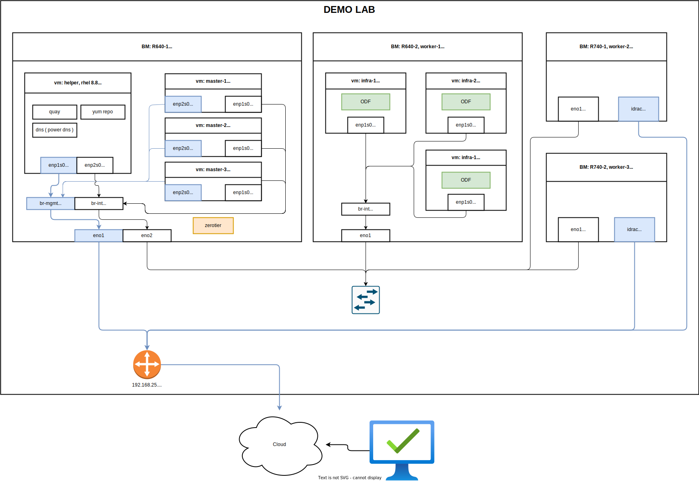
The purpose of this document is to show a practice way to build an openshift demo lab, so the partner can know where to start to build their own lab. For production env, please contact redhat professional service (GPS) for assistant.
- 1. demo lab for openshift 4.12
- 2. remote access config
- 3. setup helper node
- 4. install 3 master compact cluster
- 5. scale out 3 kvm worker nodes
- 6. add 3 infra nodes
- 7. add 2 worker BM nodes
- 8. set up infra role on cluster
- 9. install ODF
- 10. end
2. remote access config
we will use zerotier to connect to the demo lab. we will use the BM 192.168.25.90 as jumpbox.
# on 192.168.25.90
# install zerotier
curl -s https://install.zerotier.com | sudo bash
# join zerotier network
zerotier-cli join xxxxxxxxxxxx
# using a moon to accelerate network speed
zerotier-cli orbit xxxxxxxxxxxx xxxxxxxxxxxx
# enable gui
dnf groupinstall -y 'server with gui'
# add some handy tools
dnf install -y \
https://download-ib01.fedoraproject.org/pub/epel/8/Everything/x86_64/Packages/b/byobu-5.133-1.el8.noarch.rpm \
https://dl.fedoraproject.org/pub/epel/8/Everything/x86_64/Packages/s/screen-4.6.2-12.el8.x86_64.rpm \
https://dl.fedoraproject.org/pub/epel/8/Everything/x86_64/Packages/h/htop-3.2.1-1.el8.x86_64.rpm
# add support for kvm and vnc
dnf -y install qemu-kvm libvirt libguestfs-tools virt-install virt-viewer virt-manager tigervnc-server
# auto start libvirt
systemctl enable --now libvirtd
# create password for vnc
# replease xxxxxx with your password
printf 'xxxxxx\nxxxxxx\n\n' | vncpasswd
# create vnc config for vnc starting up
cat << EOF > ~/.vnc/config
session=gnome
securitytypes=vncauth,tlsvnc
# desktop=sandbox
# localhost
geometry=1440x855
alwaysshared
EOF
# auto start vnc session for root user at port 5902
cat << EOF >> /etc/tigervnc/vncserver.users
:2=root
EOF
# auto start vnc session
systemctl enable --now vncserver@:2
# disable firewalld totally, just because I am lazy.
# DO NOT use at production env.
systemctl diable --now firewalld
3. setup helper node
We need helper node, or called it base station, to host several service like container image registry, dns, load balancer for api server, yum repo ( based on use case ). The helper node is also an operation console, the login key, kubeconfig is store on helper node by default.
We will use helper node as default gw for our disconnected openshift cluster. Openshift needs a gateway to be alive, the gateway doesn't need to be functional, for example, it can forward packet to outside, if it can be pinged by openshift nodes, that is OK. If we lost the gateway, or the gateway can't be pinged, openshift installtion will be wired, and failed finally.
We will bring in some hack tips, will use powerdns as dns service, and replease load balancer, normally it is haproxy, with lua plugin of the powerdns. DO NOT use this in production env. It is just convinent for the author.
As disconnection env, we will download the installation media on VPS and sync it to helper node.
3.1. config host BM (97)
# DO NOT use at production env.
cat << EOF > ~/.ssh/config
StrictHostKeyChecking no
UserKnownHostsFile=/dev/null
EOF
# setup ntp server on BM node
sed -i "s/#allow.*/allow all/" /etc/chrony.conf
systemctl enable --now chronyd
chronyc sources -v
# .-- Source mode '^' = server, '=' = peer, '#' = local clock.
# / .- Source state '*' = current best, '+' = combined, '-' = not combined,
# | / 'x' = may be in error, '~' = too variable, '?' = unusable.
# || .- xxxx [ yyyy ] +/- zzzz
# || Reachability register (octal) -. | xxxx = adjusted offset,
# || Log2(Polling interval) --. | | yyyy = measured offset,
# || \ | | zzzz = estimated error.
# || | | \
# MS Name/IP address Stratum Poll Reach LastRx Last sample
# ===============================================================================
# ^+ 111.235.248.121 1 8 377 31 -210us[ -210us] +/- 2855us
# ^- static.home.twn.sciurida> 2 7 377 129 +468us[ +448us] +/- 9558us
# ^* twtpe2-ntp-002.aaplimg.c> 1 7 377 33 -50us[ -76us] +/- 1457us
# ^- 114-33-15-129.hinet-ip.h> 2 9 377 335 +994us[ +957us] +/- 8159us
3.2. create helper vm
SNO_MEM=32
# clean up kvm, if we created it before.
virsh destroy ocp4-helper
virsh undefine ocp4-helper
virt-install --name=ocp4-helper --vcpus=8 --ram=$(($SNO_MEM*1024)) \
--cpu=host-model \
--disk path=/image/ocp4-helper.qcow2,bus=virtio,size=800 \
--os-variant rhel8.3 --network bridge=br-int,model=virtio,mac=52:54:00:12:A1:01 \
--graphics vnc,port=59003 --noautoconsole \
--boot menu=on --cdrom /home/rhel-8.8-x86_64-dvd.iso
3.3. setup helper vm
# DO NOT use at production env.
cat << EOF > ~/.ssh/config
StrictHostKeyChecking no
UserKnownHostsFile=/dev/null
EOF
# DO NOT use at production env.
systemctl disable --now firewalld
# ntp
mv /etc/chrony.conf /etc/chrony.conf.bak
cat << EOF > /etc/chrony.conf
server 192.168.10.90 iburst
driftfile /var/lib/chrony/drift
makestep 1.0 3
rtcsync
allow all
logdir /var/log/chrony
EOF
systemctl restart chronyd
systemctl enable --now chronyd
# wait sometime, then check the status
chronyc sources -v
# .-- Source mode '^' = server, '=' = peer, '#' = local clock.
# / .- Source state '*' = current best, '+' = combined, '-' = not combined,
# | / 'x' = may be in error, '~' = too variable, '?' = unusable.
# || .- xxxx [ yyyy ] +/- zzzz
# || Reachability register (octal) -. | xxxx = adjusted offset,
# || Log2(Polling interval) --. | | yyyy = measured offset,
# || \ | | zzzz = estimated error.
# || | | \
# MS Name/IP address Stratum Poll Reach LastRx Last sample
# ===============================================================================
# ^* 192.168.10.90 3 6 7 10 -859ns[-1112ms] +/- 2795us
# setup http web server for yum repo
mkdir -p /data/yum.repos
rsync -P -arz root@192.168.10.90:/mnt/disc/BaseOS /data/yum.repos/
rsync -P -arz root@192.168.10.90:/mnt/disc/AppStream /data/yum.repos/
cat << EOF > /etc/yum.repos.d/wzh.repo
[BaseOS]
name=BaseOS
baseurl=file:////data/yum.repos/BaseOS
enabled=1
gpgcheck=0
[AppStream]
name=AppStream
baseurl=file:////data/yum.repos/AppStream
enabled=1
gpgcheck=0
EOF
dnf groupinstall -y 'development'
dnf install -y python3 nmstate ansible-core
cat << EOF > /etc/systemd/system/local-webserver-yum.service
[Unit]
Description=local-webserver-yum
[Service]
User=root
WorkingDirectory=/data/yum.repos
ExecStart=/bin/bash -c 'python3 -m http.server 5000'
Restart=always
[Install]
WantedBy=multi-user.target
EOF
systemctl daemon-reload
systemctl enable --now local-webserver-yum.service
cat << EOF > /etc/yum.repos.d/wzh.repo
[BaseOS]
name=BaseOS
baseurl=http://192.168.10.10:5000/BaseOS
enabled=1
gpgcheck=0
[AppStream]
name=AppStream
baseurl=http://192.168.10.10:5000/AppStream
enabled=1
gpgcheck=0
[epel-fix]
name=epel-fix
baseurl=http://192.168.10.10:5000/epel-fix
enabled=1
gpgcheck=0
EOF
3.4. download installation media
we will download the installation media on VPS and sync it to helper node.
3.4.1. on a VPS with vultr
# on a vultr
dnf install -y createrepo_c
# add your ocp pull secret, the content can be download from redhat portal
SEC_FILE='/data/pull-secret.json'
cat << 'EOF' > $SEC_FILE
{"auths":xxxxxxxxxxxxxxxxxxxxxxxxxxx
EOF
SEC_FILE="$HOME/.docker/config.json"
mkdir -p ${SEC_FILE%/*}
cat << 'EOF' > $SEC_FILE
{"auths":xxxxxxxxxxxxxxxxxxxxxxxxxxx
EOF
/bin/rm -rf /data/ocp4
/bin/rm -rf /data/ocp4/tmp/
mkdir -p /data/ocp4/tmp/
cd /data/ocp4/tmp/
# export http_proxy="http://127.0.0.1:18801"
# export https_proxy=${http_proxy}
git clone https://github.com/wangzheng422/openshift4-shell
# unset http_proxy
# unset https_proxy
cd /data/ocp4/tmp/openshift4-shell
git checkout ocp-4.12
# git pull origin ocp-${var_major_version}
/bin/cp -rf /data/ocp4/tmp/openshift4-shell/* /data/ocp4/
/bin/rm -rf /data/ocp4/tmp/
mkdir -p /data/ocp4/container.images
cd /data/ocp4/container.images
podman pull registry.access.redhat.com/ubi8/pause:8.7-6
podman save registry.access.redhat.com/ubi8/pause:8.7-6 | pigz -c > pause.tgz
cd /data/ocp4/
bash helper.node.client.sh -v 4.12.16
tar -xzf /data/ocp-4.12.16/oc-mirror.tar.gz -C /usr/local/bin/
chmod +x /usr/local/bin/oc-mirror
cat > /data/ocp4/mirror.yaml << EOF
apiVersion: mirror.openshift.io/v1alpha2
kind: ImageSetConfiguration
# archiveSize: 4
mirror:
platform:
architectures:
- amd64
# - arm64
channels:
- name: stable-4.12
type: ocp
minVersion: 4.12.16
maxVersion: 4.12.16
shortestPath: true
graph: false
additionalImages:
- name: registry.redhat.io/redhat/redhat-operator-index:v4.12
- name: registry.redhat.io/redhat/certified-operator-index:v4.12
- name: registry.redhat.io/redhat/community-operator-index:v4.12
- name: registry.redhat.io/redhat/redhat-marketplace-index:v4.12
- name: quay.io/openshift/origin-kube-rbac-proxy:latest
- name: quay.io/wangzheng422/debug-pod:alma-9.1
# operators:
# - catalog: registry.redhat.io/redhat/redhat-operator-index:v4.10
# packages:
# - name: cluster-logging
# channels:
# - name: stable
# minVersion: 5.6.3
# - name: elasticsearch-operator
# channels:
# - name: stable
# minVersion: 5.6.3
# - name: jaeger-product
# channels:
# - name: stable
# minVersion: 1.39.0-3
# - name: kubernetes-nmstate-operator
# channels:
# - name: stable
# minVersion: 4.10.0-202303022128
# - name: odf-operator
# channels:
# - name: stable-4.10
# minVersion: 4.10.11
# - name: sriov-network-operator
# channels:
# - name: stable
# minVersion: 4.10.0-202302280915
# - name: kubevirt-hyperconverged
# channels:
# - name: stable
# minVersion: 4.10.8
EOF
mkdir -p /data/ocp-install/oc-mirror/
cd /data/ocp-install/oc-mirror/
oc-mirror --config /data/ocp4/mirror.yaml file:///data/ocp-install/oc-mirror/
# sync back to demo lab jumpbox
cd /data
rsync -P -arz /data/ocp4 root@10.229.104.55:/home/wzh/
rsync -P -arz /data/ocp-4.12.16 root@10.229.104.55:/home/wzh/
rsync -P -arz /data/ocp-install root@10.229.104.55:/home/wzh/
3.4.2. on helper vm node
sync back from demo lab jumpbox
# on helper vm node
rsync -P -arz root@192.168.10.90:/home/wzh/* /data/
mkdir -p /data/yum.repos/epel-fix
rsync -P -arz /data/ocp4/rpms/* /data/yum.repos/epel-fix/
3.5. automatic setup power dns
setup pdns by using an ansible playbook. RedHatters build some ansible projects to help deply the openshift, our ansible playbook is used some scripts from them.
dnf install -y ansible-core
cd /data/ocp4/ansible-helper
cat > var.yaml << EOF
helper:
ip_addr: 192.168.10.10
nic: enp1s0
pdns:
bind: 0.0.0.0
port: 53
recursor_port: 5301
# forward: 172.21.1.1
static:
- base_domain: demolab-infra.wzhlab.top
record:
- name: registry
ip_addr: 192.168.10.10
- name: quay
ip_addr: 192.168.10.10
ntp:
server: 192.168.10.10
# below doesn't need after ocp-4.12 for agent based installer
# becaure coredns, haproxy move to static-pod
# and they are configured to support local resolve and redirection.
# keep here for legacy compatibility
cluster:
- base_domain: demolab-ocp.wzhlab.top
node:
- ip_addr: 192.168.10.21
name: master-01
- ip_addr: 192.168.10.22
name: master-02
- ip_addr: 192.168.10.23
name: master-03
- ip_addr: 192.168.10.31
name: infra-01
- ip_addr: 192.168.10.32
name: infra-02
- ip_addr: 192.168.10.33
name: infra-03
- ip_addr: 192.168.10.41
name: worker-01
- ip_addr: 192.168.10.42
name: worker-02
- ip_addr: 192.168.10.51
name: scale-01
- ip_addr: 192.168.10.52
name: scale-02
- ip_addr: 192.168.10.53
name: scale-03
api:
- ip_addr: 192.168.10.11
api_int:
- ip_addr: 192.168.10.11
apps:
- ip_addr: 192.168.12.12
ptr:
- addr: 192.168.10
domain: ptr01.wzhlab.top
EOF
cd /data/ocp4/ansible-helper
# ansible-playbook -vvv -e @var.yaml helper.yaml
ansible-playbook -e @var.yaml helper.yaml
and config public dns record, if your workstation's dns not point to our helper node's power dns.

3.6. create ca key and crt
# on helper vm
mkdir -p /etc/crts/ && cd /etc/crts
# https://access.redhat.com/documentation/en-us/red_hat_codeready_workspaces/2.1/html/installation_guide/installing-codeready-workspaces-in-tls-mode-with-self-signed-certificates_crw
openssl genrsa -out /etc/crts/wzhlab.top.ca.key 4096
openssl req -x509 \
-new -nodes \
-key /etc/crts/wzhlab.top.ca.key \
-sha256 \
-days 36500 \
-out /etc/crts/wzhlab.top.ca.crt \
-subj /CN="Local wzh lab Signer" \
-reqexts SAN \
-extensions SAN \
-config <(cat /etc/pki/tls/openssl.cnf \
<(printf '[SAN]\nbasicConstraints=critical, CA:TRUE\nkeyUsage=keyCertSign, cRLSign, digitalSignature'))
openssl genrsa -out /etc/crts/wzhlab.top.key 2048
openssl req -new -sha256 \
-key /etc/crts/wzhlab.top.key \
-subj "/O=Local wzh lab /CN=*.demolab-infra.wzhlab.top" \
-reqexts SAN \
-config <(cat /etc/pki/tls/openssl.cnf \
<(printf "\n[SAN]\nsubjectAltName=DNS:*.demolab-infra.wzhlab.top,DNS:*.demolab-ocp.wzhlab.top,DNS:*.wzhlab.top\nbasicConstraints=critical, CA:FALSE\nkeyUsage=digitalSignature, keyEncipherment, keyAgreement, dataEncipherment\nextendedKeyUsage=serverAuth")) \
-out /etc/crts/wzhlab.top.csr
openssl x509 \
-req \
-sha256 \
-extfile <(printf "subjectAltName=DNS:*.demolab-infra.wzhlab.top,DNS:*.demolab-ocp.wzhlab.top,DNS:*.wzhlab.top\nbasicConstraints=critical, CA:FALSE\nkeyUsage=digitalSignature, keyEncipherment, keyAgreement, dataEncipherment\nextendedKeyUsage=serverAuth") \
-days 36500 \
-in /etc/crts/wzhlab.top.csr \
-CA /etc/crts/wzhlab.top.ca.crt \
-CAkey /etc/crts/wzhlab.top.ca.key \
-CAcreateserial -out /etc/crts/wzhlab.top.crt
openssl x509 -in /etc/crts/wzhlab.top.crt -text
/bin/cp -f /etc/crts/wzhlab.top.ca.crt /etc/pki/ca-trust/source/anchors/
update-ca-trust extract
3.7. setup image registry
# https://docs.openshift.com/container-platform/4.12/installing/disconnected_install/installing-mirroring-creating-registry.html
ssh-copy-id root@192.168.10.10
podman load -i /data/ocp4/container.images/pause.tgz
mkdir -p /data/quay
cd /data/ocp4/clients
tar zvxf mirror-registry.tar.gz
# replace the xxxxxx with your password
./mirror-registry install -v \
--initPassword xxxxxx --initUser admin \
-k ~/.ssh/id_rsa \
--quayHostname quay.demolab-infra.wzhlab.top --quayRoot /data/quay \
--targetHostname quay.demolab-infra.wzhlab.top \
--sslKey /etc/crts/wzhlab.top.key --sslCert /etc/crts/wzhlab.top.crt
# ......
# PLAY RECAP ****************************************************************************************************************************************************************root@quay.demolab-infra.wzhlab.top : ok=48 changed=26 unreachable=0 failed=0 skipped=19 rescued=0 ignored=0
# INFO[2023-05-25 13:04:43] Quay installed successfully, config data is stored in /data/quay
# INFO[2023-05-25 13:04:43] Quay is available at https://quay.demolab-infra.wzhlab.top:8443 with credentials (admin, xxxxxx)
podman pod ps
# POD ID NAME STATUS CREATED INFRA ID # OF CONTAINERS
# 5afa94fc84fc quay-pod Running 9 minutes ago b911a67bf5cb 4
# import installation media into quay
mkdir -p $HOME/.local/bin
cat << 'EOF' >> ~/.bash_profile
PATH=$HOME/.local/bin:$PATH
export PATH
EOF
export BUILDNUMBER=4.12.16
pushd /data/ocp-${BUILDNUMBER}
tar -xzf openshift-client-linux-${BUILDNUMBER}.tar.gz -C ~/.local/bin/
tar -xzf openshift-install-linux-${BUILDNUMBER}.tar.gz -C ~/.local/bin/
tar -xzf oc-mirror.tar.gz -C ~/.local/bin/
chmod +x ~/.local/bin/oc-mirror
/bin/cp -f openshift-baremetal-install ~/.local/bin/
popd
SEC_FILE="$HOME/.docker/config.json"
mkdir -p ${SEC_FILE%/*}
cat << 'EOF' > $SEC_FILE
{"auths":xxxxxxxxxxxxxxxxxxxxxxxxxxx
EOF
mkdir -p /data/wzh.work
cd /data/wzh.work
oc-mirror --from=/data/ocp-install/oc-mirror/mirror_seq1_000000.tar \
docker://quay.demolab-infra.wzhlab.top:8443
after import, you can check the result from web console. as you can see, there are several repository created.
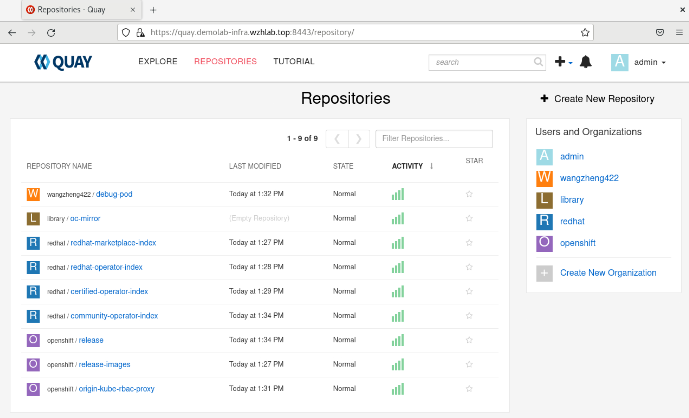
4. install 3 master compact cluster
all dependency service are installed and ready, now we will start to install 3 master compact cluster. we will begin with 3 node compact cluster, and then demo to scale out 3 kvm worker node, add 3 infra node and 2 baremetal worker node.
4.1. config on helper node
# create a user to hold the config env for the new ocp cluster
useradd -m 3node
usermod -aG wheel 3node
echo -e "%wheel\tALL=(ALL)\tNOPASSWD: ALL" > /etc/sudoers.d/020_sudo_for_me
su - 3node
ssh-keygen
cat << EOF > ~/.ssh/config
StrictHostKeyChecking no
UserKnownHostsFile=/dev/null
EOF
chmod 600 ~/.ssh/config
cat << 'EOF' >> ~/.bashrc
export BASE_DIR='/home/3node/'
EOF
export BUILDNUMBER=4.12.16
mkdir -p ~/.local/bin
pushd /data/ocp-${BUILDNUMBER}
tar -xzf openshift-client-linux-${BUILDNUMBER}.tar.gz -C ~/.local/bin/
tar -xzf openshift-install-linux-${BUILDNUMBER}.tar.gz -C ~/.local/bin/
install -m 755 /data/ocp4/clients/butane-amd64 ~/.local/bin/butane
install -m 755 /data/ocp4/clients/coreos-installer_amd64 ~/.local/bin/coreos-installer
popd
export BUILDNUMBER=4.12.16
mkdir -p ${BASE_DIR}/data/{sno/disconnected,install}
# set some parameter of you rcluster
NODE_SSH_KEY="$(cat ${BASE_DIR}/.ssh/id_rsa.pub)"
INSTALL_IMAGE_REGISTRY=quay.demolab-infra.wzhlab.top:8443
# update the xxxxxx with your password for the image registry
PULL_SECRET='{"auths":{"registry.redhat.io": {"auth": "ZHVtbXk6ZHVtbXk=","email": "noemail@localhost"},"registry.ocp4.redhat.ren:5443": {"auth": "ZHVtbXk6ZHVtbXk=","email": "noemail@localhost"},"'${INSTALL_IMAGE_REGISTRY}'": {"auth": "'$( echo -n 'admin:xxxxxx' | openssl base64 )'","email": "noemail@localhost"}}}'
NTP_SERVER=192.168.10.10
# HELP_SERVER=192.168.7.11
# KVM_HOST=192.168.7.11
API_VIP=192.168.10.11
INGRESS_VIP=192.168.10.12
# CLUSTER_PROVISION_IP=192.168.7.103
# BOOTSTRAP_IP=192.168.7.12
# 定义单节点集群的节点信息
SNO_CLUSTER_NAME=demolab-ocp
SNO_BASE_DOMAIN=wzhlab.top
# BOOTSTRAP_IP=192.168.77.42
MASTER_01_IP=192.168.10.21
MASTER_02_IP=192.168.10.22
MASTER_03_IP=192.168.10.23
# BOOTSTRAP_IPv6=fd03::42
MASTER_01_IPv6=fd03::21
MASTER_02_IPv6=fd03::22
MASTER_03_IPv6=fd03::23
# BOOTSTRAP_HOSTNAME=bootstrap-demo
MASTER_01_HOSTNAME=master-01
MASTER_02_HOSTNAME=master-02
MASTER_03_HOSTNAME=master-03
# BOOTSTRAP_INTERFACE=enp1s0
MASTER_01_INTERFACE=enp1s0
MASTER_02_INTERFACE=enp1s0
MASTER_03_INTERFACE=enp1s0
MASTER_01_INTERFACE_MAC=52:54:00:13:A1:21
MASTER_02_INTERFACE_MAC=52:54:00:13:A1:22
MASTER_03_INTERFACE_MAC=52:54:00:13:A1:23
# BOOTSTRAP_DISK=/dev/vda
MASTER_01_DISK=/dev/vda
MASTER_02_DISK=/dev/vda
MASTER_03_DISK=/dev/vda
OCP_GW=192.168.10.10
OCP_NETMASK=255.255.255.0
OCP_NETMASK_S=24
OCP_DNS=192.168.10.10
OCP_GW_v6=fd03::10
OCP_NETMASK_v6=64
# echo ${SNO_IF_MAC} > /data/sno/sno.mac
mkdir -p ${BASE_DIR}/data/install
cd ${BASE_DIR}/data/install
/bin/rm -rf *.ign .openshift_install_state.json auth bootstrap manifests master*[0-9] worker*[0-9] *
cat << EOF > ${BASE_DIR}/data/install/install-config.yaml
apiVersion: v1
baseDomain: $SNO_BASE_DOMAIN
compute:
- name: worker
replicas: 0
controlPlane:
name: master
replicas: 3
metadata:
name: $SNO_CLUSTER_NAME
networking:
# OVNKubernetes , OpenShiftSDN
clusterNetwork:
- cidr: 172.21.0.0/16
hostPrefix: 23
# - cidr: fd02::/48
# hostPrefix: 64
machineNetwork:
- cidr: 192.168.10.0/24
# - cidr: 2001:DB8::/32
serviceNetwork:
- 172.22.0.0/16
# - fd03::/112
platform:
baremetal:
apiVIPs:
- $API_VIP
# - 2001:DB8::4
ingressVIPs:
- $INGRESS_VIP
# - 2001:DB8::5
pullSecret: '${PULL_SECRET}'
sshKey: |
$( cat ${BASE_DIR}/.ssh/id_rsa.pub | sed 's/^/ /g' )
additionalTrustBundle: |
$( cat /etc/crts/wzhlab.top.ca.crt | sed 's/^/ /g' )
imageContentSources:
- mirrors:
- ${INSTALL_IMAGE_REGISTRY}/openshift/release-images
source: quay.io/openshift-release-dev/ocp-release
- mirrors:
- ${INSTALL_IMAGE_REGISTRY}/openshift/release
source: quay.io/openshift-release-dev/ocp-v4.0-art-dev
EOF
cat << EOF > ${BASE_DIR}/data/install/agent-config.yaml
apiVersion: v1alpha1
kind: AgentConfig
metadata:
name: $SNO_CLUSTER_NAME
rendezvousIP: $MASTER_01_IP
additionalNTPSources:
- $NTP_SERVER
hosts:
- hostname: $MASTER_01_HOSTNAME
role: master
rootDeviceHints:
deviceName: "$MASTER_01_DISK"
interfaces:
- name: $MASTER_01_INTERFACE
macAddress: $MASTER_01_INTERFACE_MAC
networkConfig:
interfaces:
- name: $MASTER_01_INTERFACE
type: ethernet
state: up
mac-address: $MASTER_01_INTERFACE_MAC
ipv4:
enabled: true
address:
- ip: $MASTER_01_IP
prefix-length: $OCP_NETMASK_S
dhcp: false
dns-resolver:
config:
server:
- $OCP_DNS
routes:
config:
- destination: 0.0.0.0/0
next-hop-address: $OCP_GW
next-hop-interface: $MASTER_01_INTERFACE
table-id: 254
- hostname: $MASTER_02_HOSTNAME
role: master
rootDeviceHints:
deviceName: "$MASTER_02_DISK"
interfaces:
- name: $MASTER_02_INTERFACE
macAddress: $MASTER_02_INTERFACE_MAC
networkConfig:
interfaces:
- name: $MASTER_02_INTERFACE
type: ethernet
state: up
mac-address: $MASTER_02_INTERFACE_MAC
ipv4:
enabled: true
address:
- ip: $MASTER_02_IP
prefix-length: $OCP_NETMASK_S
dhcp: false
dns-resolver:
config:
server:
- $OCP_DNS
routes:
config:
- destination: 0.0.0.0/0
next-hop-address: $OCP_GW
next-hop-interface: $MASTER_02_INTERFACE
table-id: 254
- hostname: $MASTER_03_HOSTNAME
role: master
rootDeviceHints:
deviceName: "$MASTER_03_DISK"
interfaces:
- name: $MASTER_03_INTERFACE
macAddress: $MASTER_03_INTERFACE_MAC
networkConfig:
interfaces:
- name: $MASTER_03_INTERFACE
type: ethernet
state: up
mac-address: $MASTER_03_INTERFACE_MAC
ipv4:
enabled: true
address:
- ip: $MASTER_03_IP
prefix-length: $OCP_NETMASK_S
dhcp: false
dns-resolver:
config:
server:
- $OCP_DNS
routes:
config:
- destination: 0.0.0.0/0
next-hop-address: $OCP_GW
next-hop-interface: $MASTER_03_INTERFACE
table-id: 254
EOF
/bin/cp -f ${BASE_DIR}/data/install/install-config.yaml ${BASE_DIR}/data/install/install-config.yaml.bak
/bin/cp -f ${BASE_DIR}/data/install/agent-config.yaml ${BASE_DIR}/data/install/agent-config.yaml.bak
openshift-install --dir=${BASE_DIR}/data/install agent create cluster-manifests
sudo bash -c "/bin/cp -f mirror/registries.conf /etc/containers/registries.conf.d/; chmod +r /etc/containers/registries.conf.d/*"
mkdir -p ${BASE_DIR}/data/install/openshift/
# this is used to copy ntp config for ocp
# but not used anymore for agent based install mode
# /bin/cp -f /data/ocp4/ansible-helper/files/* ${BASE_DIR}/data/install/openshift/
sudo bash -c "cd /data/ocp4 ; bash image.registries.conf.sh quay.demolab-infra.wzhlab.top:8443 ;"
/bin/cp -f /data/ocp4/99-worker-container-registries.yaml ${BASE_DIR}/data/install/openshift/
/bin/cp -f /data/ocp4/99-master-container-registries.yaml ${BASE_DIR}/data/install/openshift/
cd ${BASE_DIR}/data/install/
# openshift-install --dir=${BASE_DIR}/data/install create ignition-configs
mkdir -p ~/.cache/agent/image_cache/
/bin/cp -f /data/ocp-$BUILDNUMBER/rhcos-live.x86_64.iso ~/.cache/agent/image_cache/coreos-x86_64.iso
openshift-install --dir=${BASE_DIR}/data/install agent create image --log-level=debug
# ......
# DEBUG Fetching image from OCP release (oc adm release info --image-for=machine-os-images --insecure=true --icsp-file=/tmp/icsp-file3636774741 quay.io/openshift-release-dev/ocp-release@sha256:96bf74ce789ccb22391deea98e0c5050c41b67cc17defbb38089d32226dba0b8)
# DEBUG The file was found in cache: /home/3node/.cache/agent/image_cache/coreos-x86_64.iso
# INFO Verifying cached file
# DEBUG extracting /coreos/coreos-x86_64.iso.sha256 to /tmp/cache1876698393, oc image extract --path /coreos/coreos-x86_64.iso.sha256:/tmp/cache1876698393 --confirm --icsp-file=/tmp/icsp-file455852761 quay.io/openshift-release-dev/ocp-v4.0-art-dev@sha256:052130abddf741195b6753888cf8a00757dedeb7010f7d4dcc4b842b5bc705f6
# ......
# we will add another user for debugging
# DO NOT USE IN PRODUCTION
coreos-installer iso ignition show agent.x86_64.iso > ignition.ign
# HTTP_PATH=http://192.168.7.11:8080/ignition
source /data/ocp4/acm.fn.sh
# 我们会创建一个wzh用户，密码是redhat，这个可以在第一次启动的是，从console/ssh直接用用户名口令登录
# 方便排错和研究
VAR_PWD_HASH="$(python3 -c 'import crypt,getpass; print(crypt.crypt("redhat"))')"
cat ${BASE_DIR}/data/install/ignition.ign \
| jq --arg VAR "$VAR_PWD_HASH" --arg VAR_SSH "$NODE_SSH_KEY" '.passwd.users += [{ "name": "wzh", "system": true, "passwordHash": $VAR , "sshAuthorizedKeys": [ $VAR_SSH ], "groups": [ "adm", "wheel", "sudo", "systemd-journal" ] }]' \
| jq -c . \
> ${BASE_DIR}/data/install/ignition-iso.ign
coreos-installer iso ignition embed -f -i ignition-iso.ign agent.x86_64.iso
# VAR_IMAGE_VER=rhcos-410.86.202303200936-AnolisOS-0-live.x86_64.iso
4.2. boot 3 kvm for master node
# on helper node
# copy back the iso to baremetal 97
scp /home/3node/data/install/agent.x86_64.iso root@192.168.10.90:/home/wzh.iso/
# on baremetal 97
# cleanup
virsh destroy ocp4-master-01
virsh undefine ocp4-master-01
/bin/rm -f /image/ocp4-master-01.qcow2
virsh destroy ocp4-master-02
virsh undefine ocp4-master-02
/bin/rm -f /image/ocp4-master-02.qcow2
virsh destroy ocp4-master-03
virsh undefine ocp4-master-03
/bin/rm -f /image/ocp4-master-03.qcow2
SNO_MEM=48
virsh destroy ocp4-master-01
virsh undefine ocp4-master-01
virt-install --name=ocp4-master-01 --vcpus=12 --ram=$(($SNO_MEM*1024)) \
--cpu=host-model \
--disk path=/image/ocp4-master-01.qcow2,bus=virtio,size=120 \
--os-variant rhel8.3 \
--network bridge=br-int,model=virtio,mac=52:54:00:13:A1:21 \
--graphics vnc,port=59021 --noautoconsole \
--boot menu=on --cdrom /home/wzh.iso/agent.x86_64.iso
virsh destroy ocp4-master-02
virsh undefine ocp4-master-02
virt-install --name=ocp4-master-02 --vcpus=12 --ram=$(($SNO_MEM*1024)) \
--cpu=host-model \
--disk path=/image/ocp4-master-02.qcow2,bus=virtio,size=120 \
--os-variant rhel8.3 \
--network bridge=br-int,model=virtio,mac=52:54:00:13:A1:22 \
--graphics vnc,port=59022 --noautoconsole \
--boot menu=on --cdrom /home/wzh.iso/agent.x86_64.iso
virsh destroy ocp4-master-03
virsh undefine ocp4-master-03
virt-install --name=ocp4-master-03 --vcpus=12 --ram=$(($SNO_MEM*1024)) \
--cpu=host-model \
--disk path=/image/ocp4-master-03.qcow2,bus=virtio,size=120 \
--os-variant rhel8.3 \
--network bridge=br-int,model=virtio,mac=52:54:00:13:A1:23 \
--graphics vnc,port=59023 --noautoconsole \
--boot menu=on --cdrom /home/wzh.iso/agent.x86_64.iso
The vm will reboot, in the first reboot, the kvm will not poweron after poweroff, keep an eye on the kvm manager, and start it manually.
4.3. wait and check the result
cd ${BASE_DIR}/data/install
export KUBECONFIG=${BASE_DIR}/data/install/auth/kubeconfig
echo "export KUBECONFIG=${BASE_DIR}/data/install/auth/kubeconfig" >> ~/.bashrc
# oc completion bash | sudo tee /etc/bash_completion.d/openshift > /dev/null
cd ${BASE_DIR}/data/install
openshift-install --dir=${BASE_DIR}/data/install agent wait-for bootstrap-complete \
--log-level=debug
# DEBUG Host master-02 validation: Host subnets are not overlapping
# DEBUG Host master-02 validation: cnv is disabled
# DEBUG Host master-02 validation: lso is disabled
# DEBUG Host master-02 validation: lvm is disabled
# DEBUG Host master-02 validation: odf is disabled
# INFO Host: master-03, reached installation stage Done
# INFO Host: master-01, reached installation stage Waiting for controller: waiting for controller pod ready event
# INFO Bootstrap configMap status is complete
# INFO cluster bootstrap is complete
# if for some reason, master-01 is pending approve to join cluster
# add master-01 back
# you should not use below commands in normal case.
oc get csr
oc get csr -ojson | jq -r '.items[] | select(.status == {} ) | .metadata.name' | xargs oc adm certificate approve
cd ${BASE_DIR}/data/install
openshift-install --dir=${BASE_DIR}/data/install agent wait-for install-complete
# INFO Bootstrap Kube API Initialized
# INFO Bootstrap configMap status is complete
# INFO cluster bootstrap is complete
# INFO Cluster is installed
# INFO Install complete!
# INFO To access the cluster as the system:admin user when using 'oc', run
# INFO export KUBECONFIG=/home/3node/data/install/auth/kubeconfig
# INFO Access the OpenShift web-console here: https://console-openshift-console.apps.demolab-ocp.wzhlab.top
# INFO Login to the console with user: "kubeadmin", and password: "jxjb8-PPkX5-4WF78-5w8eL"
# customize registry config for quay
# oc patch mcp/master --patch '{"spec":{"paused":true}}' --type=merge
# oc patch mcp/worker --patch '{"spec":{"paused":true}}' --type=merge
# oc create -f ${BASE_DIR}/data/install/99-worker-container-registries.yaml
# oc create -f ${BASE_DIR}/data/install/99-master-container-registries.yaml
# oc patch mcp/master --patch '{"spec":{"paused":false}}' --type=merge
# oc patch mcp/worker --patch '{"spec":{"paused":false}}' --type=merge
5. scale out 3 kvm worker nodes
We will build 3 kvm worker nodes, and let openshift to scale out openshift nodes on these kvm. So we can demo the openshift scale-out and scale-in function.
The lab BM's bmc is connect to br-mgmt, and the br-int can not route to the br-mgmt, so the metal3's pod can't access bmc/idrac to insert boot image, that is why we have to demo the scale-out function using kvm.
5.1. config on host server
# on baremetal 97
mkdir -p /home/wzh.work
# cleanup
virsh destroy ocp4-scale-01
virsh undefine ocp4-scale-01
/bin/rm -f /image/ocp4-scale-01.qcow2
virsh destroy ocp4-scale-02
virsh undefine ocp4-scale-02
/bin/rm -f /image/ocp4-scale-02.qcow2
virsh destroy ocp4-scale-03
virsh undefine ocp4-scale-03
/bin/rm -f /image/ocp4-scale-03.qcow2
# define scale worker
SNO_MEM=48
virsh destroy ocp4-scale-01
virsh undefine ocp4-scale-01
virt-install --name=ocp4-scale-01 --vcpus=12 --ram=$(($SNO_MEM*1024)) \
--cpu=host-model \
--disk path=/image/ocp4-scale-01.qcow2,bus=virtio,size=100 \
--os-variant rhel8.3 \
--network bridge=br-int,model=virtio,mac=52:54:00:13:A1:51 \
--graphics vnc,port=59051 --noautoconsole \
--print-xml > /home/wzh.work/ocp4-scale-01.xml
virsh define --file /home/wzh.work/ocp4-scale-01.xml
virsh destroy ocp4-scale-02
virsh undefine ocp4-scale-02
virt-install --name=ocp4-scale-02 --vcpus=12 --ram=$(($SNO_MEM*1024)) \
--cpu=host-model \
--disk path=/image/ocp4-scale-02.qcow2,bus=virtio,size=100 \
--os-variant rhel8.3 \
--network bridge=br-int,model=virtio,mac=52:54:00:13:A1:52 \
--graphics vnc,port=59052 --noautoconsole \
--print-xml > /home/wzh.work/ocp4-scale-02.xml
virsh define --file /home/wzh.work/ocp4-scale-02.xml
virsh destroy ocp4-scale-03
virsh undefine ocp4-scale-03
virt-install --name=ocp4-scale-03 --vcpus=12 --ram=$(($SNO_MEM*1024)) \
--cpu=host-model \
--disk path=/image/ocp4-scale-03.qcow2,bus=virtio,size=100 \
--os-variant rhel8.3 \
--network bridge=br-int,model=virtio,mac=52:54:00:13:A1:53 \
--graphics vnc,port=59053 --noautoconsole \
--print-xml > /home/wzh.work/ocp4-scale-03.xml
virsh define --file /home/wzh.work/ocp4-scale-03.xml
# setup and start bmc simulator for kvm
dnf -y install python3-pip
python3 -m pip install --upgrade pip --user
pip3 install --user sushy-tools
mkdir -p /etc/crts
scp root@192.168.10.10:/etc/crts/* /etc/crts/
# /root/.local/bin/sushy-emulator -i 0.0.0.0 --ssl-certificate /etc/crts/redhat.ren.crt --ssl-key /etc/crts/redhat.ren.key
# try to deploy as systemd service
cat << EOF > /etc/systemd/system/sushy-emulator.service
[Unit]
Description=sushy-emulator
[Service]
User=root
WorkingDirectory=/root
ExecStart=/bin/bash -c '/root/.local/bin/sushy-emulator -i 0.0.0.0 --ssl-certificate /etc/crts/wzhlab.top.crt --ssl-key /etc/crts/wzhlab.top.key'
Restart=always
[Install]
WantedBy=multi-user.target
EOF
systemctl daemon-reload
systemctl enable --now sushy-emulator.service
# collect mac and vm info for helper
# on helper clean all
# /bin/rm -f /data/install/mac.list.*
# /bin/rm -f /data/install/vm.list.*
# back to 103
cd /home/wzh.work
for i in ocp4-scale-0{1..3}
do
echo -ne "${i}\t" ;
virsh dumpxml ${i} | grep "mac address" | cut -d\' -f2 | tr '\n' '\t'
echo
done > mac.list.97
cat /home/wzh.work/mac.list.97
# ocp4-scale-01 52:54:00:13:a1:51
# ocp4-scale-02 52:54:00:13:a1:52
# ocp4-scale-03 52:54:00:13:a1:53
cat << 'EOF' > redfish.sh
#!/usr/bin/env bash
curl -k -s https://127.0.0.1:8000/redfish/v1/Systems/ | jq -r '.Members[]."@odata.id"' > list
while read -r line; do
curl -k -s https://127.0.0.1:8000/$line | jq -j '.Id, " ", .Name, "\n" '
done < list
EOF
bash redfish.sh | grep ocp4-scale > /home/wzh.work/vm.list.97
cat /home/wzh.work/vm.list.97
# e0113aa6-1465-40da-9128-ae9087c76924 ocp4-scale-02
# 97d16a4b-fae3-43b7-bd5b-711c83cf840f ocp4-scale-01
# 25dda43c-fb42-4ac8-bea1-46c46635e7fa ocp4-scale-03
scp /home/wzh.work/{mac,vm}.list.* root@192.168.10.10:/home/3node/data/install/
cat > /home/wzh.work/crack.txt << 'EOF'
chown 3node: /home/3node/data/install/*
EOF
ssh root@192.168.10.10 < /home/wzh.work/crack.txt
5.2. config on helper node
# on helper node
cd ${BASE_DIR}/data/install/
cat << EOF > ${BASE_DIR}/data/install/bmh-01.yaml
# below is for ocp4-scale-01
---
apiVersion: v1
kind: Secret
metadata:
name: scale-01-bmc-secret
type: Opaque
data:
username: $(echo -ne "admin" | base64)
password: $(echo -ne "password" | base64)
---
apiVersion: v1
kind: Secret
metadata:
name: ocp4-scale-01-network-config-secret
type: Opaque
stringData:
nmstate: |
dns-resolver:
config:
server:
- 192.168.10.10
interfaces:
- ipv4:
address:
- ip: 192.168.10.51
prefix-length: 24
dhcp: false
enabled: true
name: enp1s0
state: up
type: ethernet
routes:
config:
- destination: 0.0.0.0/0
next-hop-address: 192.168.10.10
next-hop-interface: enp1s0
table-id: 254
---
apiVersion: metal3.io/v1alpha1
kind: BareMetalHost
metadata:
name: ocp4-scale-01
spec:
online: false
bootMode: legacy
# externallyProvisioned: true
# hardwareProfile: unknown
bootMACAddress: $(cat ${BASE_DIR}/data/install/mac.list.* | grep ocp4-scale-01 | awk '{print $2}')
bmc:
address: redfish-virtualmedia://192.168.10.90:8000/redfish/v1/Systems/$(cat ${BASE_DIR}/data/install/vm.list.* | grep ocp4-scale-01 | awk '{print $1}')
credentialsName: scale-01-bmc-secret
disableCertificateVerification: true
rootDeviceHints:
deviceName: /dev/vda
preprovisioningNetworkDataName: ocp4-scale-01-network-config-secret
# below is for ocp4-scale-02
---
apiVersion: v1
kind: Secret
metadata:
name: scale-02-bmc-secret
type: Opaque
data:
username: $(echo -ne "admin" | base64)
password: $(echo -ne "password" | base64)
---
apiVersion: v1
kind: Secret
metadata:
name: ocp4-scale-02-network-config-secret
type: Opaque
stringData:
nmstate: |
dns-resolver:
config:
server:
- 192.168.10.10
interfaces:
- ipv4:
address:
- ip: 192.168.10.52
prefix-length: 24
dhcp: false
enabled: true
name: enp1s0
state: up
type: ethernet
routes:
config:
- destination: 0.0.0.0/0
next-hop-address: 192.168.10.10
next-hop-interface: enp1s0
table-id: 254
---
apiVersion: metal3.io/v1alpha1
kind: BareMetalHost
metadata:
name: ocp4-scale-02
spec:
online: false
bootMode: legacy
# externallyProvisioned: true
# hardwareProfile: unknown
bootMACAddress: $(cat ${BASE_DIR}/data/install/mac.list.* | grep ocp4-scale-02 | awk '{print $2}')
bmc:
address: redfish-virtualmedia://192.168.10.90:8000/redfish/v1/Systems/$(cat ${BASE_DIR}/data/install/vm.list.* | grep ocp4-scale-02 | awk '{print $1}')
credentialsName: scale-02-bmc-secret
disableCertificateVerification: true
rootDeviceHints:
deviceName: /dev/vda
preprovisioningNetworkDataName: ocp4-scale-02-network-config-secret
# below is for ocp4-scale-03
---
apiVersion: v1
kind: Secret
metadata:
name: scale-03-bmc-secret
type: Opaque
data:
username: $(echo -ne "admin" | base64)
password: $(echo -ne "password" | base64)
---
apiVersion: v1
kind: Secret
metadata:
name: ocp4-scale-03-network-config-secret
type: Opaque
stringData:
nmstate: |
dns-resolver:
config:
server:
- 192.168.10.10
interfaces:
- ipv4:
address:
- ip: 192.168.10.53
prefix-length: 24
dhcp: false
enabled: true
name: enp1s0
state: up
type: ethernet
routes:
config:
- destination: 0.0.0.0/0
next-hop-address: 192.168.10.10
next-hop-interface: enp1s0
table-id: 254
---
apiVersion: metal3.io/v1alpha1
kind: BareMetalHost
metadata:
name: ocp4-scale-03
spec:
online: false
bootMode: legacy
# externallyProvisioned: true
# hardwareProfile: unknown
bootMACAddress: $(cat ${BASE_DIR}/data/install/mac.list.* | grep ocp4-scale-03 | awk '{print $2}')
bmc:
address: redfish-virtualmedia://192.168.10.90:8000/redfish/v1/Systems/$(cat ${BASE_DIR}/data/install/vm.list.* | grep ocp4-scale-03 | awk '{print $1}')
credentialsName: scale-03-bmc-secret
disableCertificateVerification: true
rootDeviceHints:
deviceName: /dev/vda
preprovisioningNetworkDataName: ocp4-scale-03-network-config-secret
EOF
oc -n openshift-machine-api create -f ${BASE_DIR}/data/install/bmh-01.yaml
After apply the baremetal host config, the kvm will boot, and ocp will detect the machine hareware config using ironic. And the kvm will be power-off after the check finish.
Then you can see the baremetal is ready to provision.

5.3. scale out and check the result
find the entry of machineset config, and set the machine count to '1'.

You will find the kvm is booting and provisioning as worker node.

after some time, the worker node is provisioned, and you can see it in cli console.
oc get node
# NAME STATUS ROLES AGE VERSION
# master-01 Ready control-plane,master,worker 3h19m v1.25.8+37a9a08
# master-02 Ready control-plane,master,worker 4h1m v1.25.8+37a9a08
# master-03 Ready control-plane,master,worker 4h3m v1.25.8+37a9a08
# scale-01.demolab-ocp.wzhlab.top Ready worker 3m55s v1.25.8+37a9a08
you can find a new baremetal host is provisioned in web console.

You can also find a new machine is created in web console.
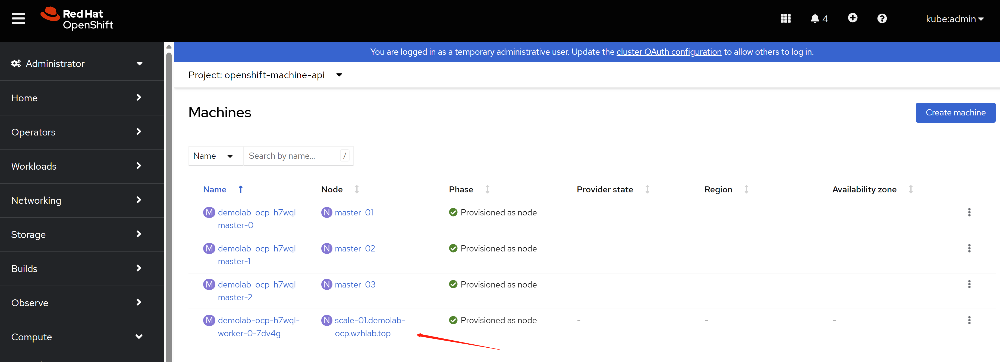
you can also find a new node is created in web console.
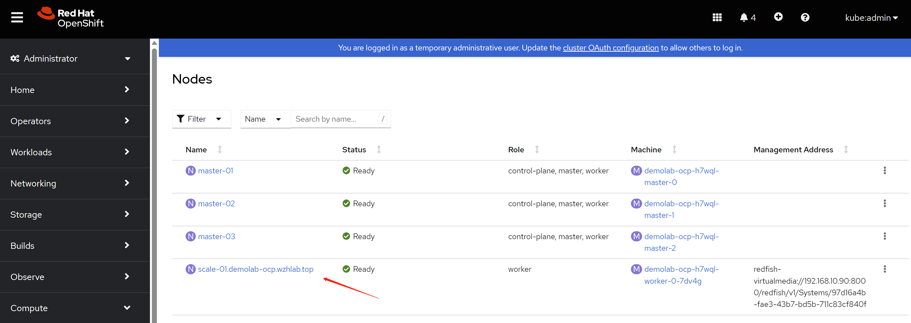
5.4. scale in and check the result
Scale in is very simple, just open machine set config, and decrease the number 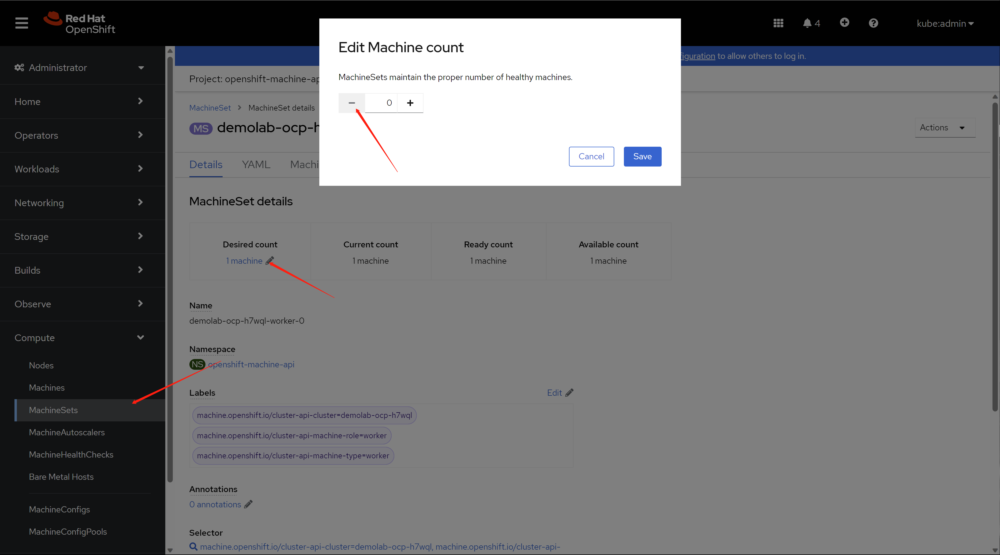
Then, the vm is powered off, and the CR, like machine and node is deleted.

You can confirm that in the cli.
oc get node
# NAME STATUS ROLES AGE VERSION
# master-01 Ready control-plane,master,worker 3h52m v1.25.8+37a9a08
# master-02 Ready control-plane,master,worker 4h33m v1.25.8+37a9a08
# master-03 Ready control-plane,master,worker 4h35m v1.25.8+37a9a08
6. add 3 infra nodes
Add the 3 infra kvm node is simple, becasue we will not using metal3 to automatically scale-out. We will build an ISO file for each of the kvm, and boot kvm using them.
6.1. config on helper node
# get ignition file for worker node
cd ${BASE_DIR}/data/install/
oc extract -n openshift-machine-api secret/worker-user-data-managed --keys=userData --to=- > worker.ign
# copy the ignition file to root of local web server
# later, during the rhcos booting, it will fetch the ignition file
# from the webserver
sudo mkdir -p /data/yum.repos/conf
sudo /bin/cp -f worker.ign /data/yum.repos/conf/
# some env
# BOOTSTRAP_IP=192.168.77.42
INFRA_01_IP=192.168.10.31
INFRA_02_IP=192.168.10.32
INFRA_03_IP=192.168.10.33
# BOOTSTRAP_IPv6=fd03::42
INFRA_01_IPv6=fd03::31
INFRA_02_IPv6=fd03::32
INFRA_03_IPv6=fd03::33
# BOOTSTRAP_HOSTNAME=bootstrap-demo
INFRA_01_HOSTNAME=infra-01
INFRA_02_HOSTNAME=infra-02
INFRA_03_HOSTNAME=infra-03
# BOOTSTRAP_INTERFACE=enp1s0
INFRA_01_INTERFACE=enp1s0
INFRA_02_INTERFACE=enp1s0
INFRA_03_INTERFACE=enp1s0
# BOOTSTRAP_DISK=/dev/vda
INFRA_01_DISK=/dev/vda
INFRA_02_DISK=/dev/vda
INFRA_03_DISK=/dev/vda
OCP_GW=192.168.10.10
OCP_NETMASK=255.255.255.0
OCP_NETMASK_S=24
OCP_DNS=192.168.10.10
OCP_GW_v6=fd03::10
OCP_NETMASK_v6=64
# build the iso file for each of kvm
export BUILDNUMBER=4.12.16
cd ${BASE_DIR}/data/install/
/bin/cp -f /data/ocp-${BUILDNUMBER}/rhcos-live.x86_64.iso infra-01.iso
coreos-installer iso kargs modify -a "ip=$INFRA_01_IP::$OCP_GW:$OCP_NETMASK:$INFRA_01_HOSTNAME:$INFRA_01_INTERFACE:none nameserver=$OCP_DNS coreos.inst.install_dev=$INFRA_01_DISK coreos.inst.ignition_url=http://192.168.10.10:5000/conf/worker.ign coreos.inst.insecure systemd.debug-shell=1 " infra-01.iso
/bin/cp -f /data/ocp-${BUILDNUMBER}/rhcos-live.x86_64.iso infra-02.iso
coreos-installer iso kargs modify -a "ip=$INFRA_02_IP::$OCP_GW:$OCP_NETMASK:$INFRA_02_HOSTNAME:$INFRA_02_INTERFACE:none nameserver=$OCP_DNS coreos.inst.install_dev=$INFRA_02_DISK coreos.inst.ignition_url=http://192.168.10.10:5000/conf/worker.ign coreos.inst.insecure systemd.debug-shell=1 " infra-02.iso
/bin/cp -f /data/ocp-${BUILDNUMBER}/rhcos-live.x86_64.iso infra-03.iso
coreos-installer iso kargs modify -a "ip=$INFRA_03_IP::$OCP_GW:$OCP_NETMASK:$INFRA_03_HOSTNAME:$INFRA_03_INTERFACE:none nameserver=$OCP_DNS coreos.inst.install_dev=$INFRA_03_DISK coreos.inst.ignition_url=http://192.168.10.10:5000/conf/worker.ign coreos.inst.insecure systemd.debug-shell=1 " infra-03.iso
# transfer the iso file to kvm host server ( 98 )
scp infra-01.iso root@192.168.10.92:/data/kvm/
scp infra-02.iso root@192.168.10.92:/data/kvm/
scp infra-03.iso root@192.168.10.92:/data/kvm/
6.2. config infra host BM nodes (98)
# dnf setup for the server
cat << EOF > ~/.ssh/config
StrictHostKeyChecking no
UserKnownHostsFile=/dev/null
EOF
# DO NOT use at production env.
systemctl disable --now firewalld
# ntp
mv /etc/chrony.conf /etc/chrony.conf.bak
cat << EOF > /etc/chrony.conf
server 192.168.10.90 iburst
driftfile /var/lib/chrony/drift
makestep 1.0 3
rtcsync
allow all
logdir /var/log/chrony
EOF
systemctl restart chronyd
systemctl enable --now chronyd
cat << EOF > /etc/yum.repos.d/wzh.repo
[BaseOS]
name=BaseOS
baseurl=http://192.168.10.10:5000/BaseOS
enabled=1
gpgcheck=0
[AppStream]
name=AppStream
baseurl=http://192.168.10.10:5000/AppStream
enabled=1
gpgcheck=0
[epel-fix]
name=epel-fix
baseurl=http://192.168.10.10:5000/epel-fix
enabled=1
gpgcheck=0
EOF
dnf groupinstall -y 'server with gui'
# add support for kvm and vnc
dnf -y install qemu-kvm libvirt libguestfs-tools virt-install virt-viewer virt-manager tigervnc-server
# auto start libvirt
systemctl enable --now libvirtd
# create password for vnc
# replace 'xxxxxx' with your password
printf 'xxxxxx\nxxxxxx\n\n' | vncpasswd
# create vnc config for vnc starting up
cat << EOF > ~/.vnc/config
session=gnome
securitytypes=vncauth,tlsvnc
# desktop=sandbox
geometry=1440x855
alwaysshared
EOF
# auto start vnc session for root user at port 5902
cat << EOF >> /etc/tigervnc/vncserver.users
:2=root
EOF
# auto start vnc session
systemctl enable --now vncserver@:2
#setup network bridge
cat << 'EOF' > /data/kvm/bridge.sh
#!/usr/bin/env bash
PUB_CONN='eno1'
PUB_IP='192.168.10.92/24'
PUB_GW='192.168.10.10'
PUB_DNS='192.168.10.10'
BR_IF='br-int'
nmcli con down "$PUB_CONN"
nmcli con delete "$PUB_CONN"
nmcli con down "$BR_IF"
nmcli con delete "$BR_IF"
# RHEL 8.1 appends the word "System" in front of the connection,delete in case it exists
nmcli con down "System $PUB_CONN"
nmcli con delete "System $PUB_CONN"
nmcli connection add ifname "$BR_IF" type bridge con-name "$BR_IF" ipv4.method 'manual' \
ipv4.address "$PUB_IP" \
ipv4.gateway "$PUB_GW" \
ipv4.dns "$PUB_DNS"
nmcli con add type bridge-slave ifname "$PUB_CONN" master "$BR_IF"
nmcli con down "$PUB_CONN";pkill dhclient;dhclient "$BR_IF"
nmcli con up "$BR_IF"
EOF
bash /data/kvm/bridge.sh
# setup the thin provision lvm
lsblk
# NAME MAJ:MIN RM SIZE RO TYPE MOUNTPOINT
# sda 8:0 0 4.4T 0 disk
# ├─sda1 8:1 0 600M 0 part /boot/efi
# ├─sda2 8:2 0 1G 0 part /boot
# └─sda3 8:3 0 500G 0 part /
# sr0 11:0 1 1024M 0 rom
fdisk /dev/sda
# n -> to create new partition
# w -> to write out the new partition
lsblk
# NAME MAJ:MIN RM SIZE RO TYPE MOUNTPOINT
# sda 8:0 0 4.4T 0 disk
# ├─sda1 8:1 0 600M 0 part /boot/efi
# ├─sda2 8:2 0 1G 0 part /boot
# ├─sda3 8:3 0 500G 0 part /
# └─sda4 8:4 0 3.9T 0 part
# sr0 11:0 1 1024M 0 rom
pvcreate -y /dev/sda4
vgcreate vgdata /dev/sda4
# https://access.redhat.com/articles/766133
lvcreate -y -n poolA -L 100G vgdata
lvcreate -y -n poolA_meta -L 1G vgdata
lvconvert -y --thinpool vgdata/poolA --poolmetadata vgdata/poolA_meta
# Thin pool volume with chunk size 64.00 KiB can address at most <15.88 TiB of data.
# WARNING: Converting vgdata/poolA and vgdata/poolA_meta to thin pool's data and metadata volumes with metadata wiping.
# THIS WILL DESTROY CONTENT OF LOGICAL VOLUME (filesystem etc.)
# Converted vgdata/poolA and vgdata/poolA_meta to thin pool.
lvextend -l +100%FREE vgdata/poolA
# Rounding size to boundary between physical extents: <3.88 GiB.
# Size of logical volume vgdata/poolA_tmeta changed from 1.00 GiB (256 extents) to <3.88 GiB (992 extents).
# Size of logical volume vgdata/poolA_tdata changed from 100.00 GiB (25600 extents) to <3.87 TiB (1013929 extents).
# Logical volume vgdata/poolA successfully resized.
lsblk
# NAME MAJ:MIN RM SIZE RO TYPE MOUNTPOINT
# sda 8:0 0 4.4T 0 disk
# ├─sda1 8:1 0 600M 0 part /boot/efi
# ├─sda2 8:2 0 1G 0 part /boot
# ├─sda3 8:3 0 500G 0 part /
# └─sda4 8:4 0 3.9T 0 part
# ├─vgdata-poolA_tmeta 253:0 0 3.9G 0 lvm
# │ └─vgdata-poolA 253:2 0 3.9T 0 lvm
# └─vgdata-poolA_tdata 253:1 0 3.9T 0 lvm
# └─vgdata-poolA 253:2 0 3.9T 0 lvm
# sr0 11:0 1 1024M 0 rom
why we use thin provision lvm, not using qcow2 file on xfs filesystem? because the performance, lvm is 2x or 3x faster than qcow2 file on filesystem.
6.3. boot 3 infra kvm
# cleanup the kvm config
create_lv() {
var_vg=$1
var_pool=$2
var_lv=$3
var_size=$4
var_action=$5
lvremove -f $var_vg/$var_lv
# lvcreate -y -L $var_size -n $var_lv $var_vg
if [ "$var_action" == "recreate" ]; then
lvcreate --type thin -n $var_lv -V $var_size --thinpool $var_vg/$var_pool
wipefs --all --force /dev/$var_vg/$var_lv
fi
}
virsh destroy ocp4-infra-01
virsh undefine ocp4-infra-01
create_lv vgdata poolA lv-ocp4-infra-01 100G
create_lv vgdata poolA lv-ocp4-infra-01-data 1024G
virsh destroy ocp4-infra-02
virsh undefine ocp4-infra-02
create_lv vgdata poolA lv-ocp4-infra-02 100G
create_lv vgdata poolA lv-ocp4-infra-02-data 1024G
virsh destroy ocp4-infra-03
virsh undefine ocp4-infra-03
create_lv vgdata poolA lv-ocp4-infra-03 100G
create_lv vgdata poolA lv-ocp4-infra-03-data 1024G
# start the kvm
SNO_MEM=32
virsh destroy ocp4-infra-01
virsh undefine ocp4-infra-01
create_lv vgdata poolA lv-ocp4-infra-01 100G recreate
create_lv vgdata poolA lv-ocp4-infra-01-data 1024G recreate
virt-install --name=ocp4-infra-01 --vcpus=16 --ram=$(($SNO_MEM*1024)) \
--cpu=host-model \
--disk path=/dev/vgdata/lv-ocp4-infra-01,device=disk,bus=virtio,format=raw \
--disk path=/dev/vgdata/lv-ocp4-infra-01-data,device=disk,bus=virtio,format=raw \
--os-variant rhel8.3 --network bridge=br-int,model=virtio,mac=52:54:00:13:A1:31 \
--graphics vnc,port=59031 --noautoconsole \
--boot menu=on --cdrom /data/kvm/infra-01.iso
virsh destroy ocp4-infra-02
virsh undefine ocp4-infra-02
create_lv vgdata poolA lv-ocp4-infra-02 100G recreate
create_lv vgdata poolA lv-ocp4-infra-02-data 1024G recreate
virt-install --name=ocp4-infra-02 --vcpus=16 --ram=$(($SNO_MEM*1024)) \
--cpu=host-model \
--disk path=/dev/vgdata/lv-ocp4-infra-02,device=disk,bus=virtio,format=raw \
--disk path=/dev/vgdata/lv-ocp4-infra-02-data,device=disk,bus=virtio,format=raw \
--os-variant rhel8.3 --network bridge=br-int,model=virtio,mac=52:54:00:13:A1:32 \
--graphics vnc,port=59032 --noautoconsole \
--boot menu=on --cdrom /data/kvm/infra-02.iso
virsh destroy ocp4-infra-03
virsh undefine ocp4-infra-03
create_lv vgdata poolA lv-ocp4-infra-03 100G recreate
create_lv vgdata poolA lv-ocp4-infra-03-data 1024G recreate
virt-install --name=ocp4-infra-03 --vcpus=16 --ram=$(($SNO_MEM*1024)) \
--cpu=host-model \
--disk path=/dev/vgdata/lv-ocp4-infra-03,device=disk,bus=virtio,format=raw \
--disk path=/dev/vgdata/lv-ocp4-infra-03-data,device=disk,bus=virtio,format=raw \
--os-variant rhel8.3 --network bridge=br-int,model=virtio,mac=52:54:00:13:A1:33 \
--graphics vnc,port=59033 --noautoconsole \
--boot menu=on --cdrom /data/kvm/infra-03.iso
6.4. wait and check the result
# approve is automatically, if it is not,
# approve the new infra node to join cluster manually
oc get csr
oc get csr -ojson | jq -r '.items[] | select(.status == {} ) | .metadata.name' | xargs oc adm certificate approve
oc get node
# NAME STATUS ROLES AGE VERSION
# infra-01 Ready worker 117s v1.25.8+37a9a08
# infra-02 Ready worker 111s v1.25.8+37a9a08
# infra-03 Ready worker 110s v1.25.8+37a9a08
# master-01 Ready control-plane,master,worker 6h3m v1.25.8+37a9a08
# master-02 Ready control-plane,master,worker 6h45m v1.25.8+37a9a08
# master-03 Ready control-plane,master,worker 6h47m v1.25.8+37a9a08
7. add 2 worker BM nodes
Add the 2 worker baremetal nodes is the same with the 3 infra node.
if you still want to scale out by metal3, using below config parameter after you plug-in the line of bmc to br-int
worker-01
F0:D4:E2:EA:6F:E0
idrac-virtualmedia://<ip of bmc>/redfish/v1/Systems/System.Embedded.1
7.1. config on helper node
# some env
# BOOTSTRAP_IP=192.168.77.42
WORKER_01_IP=192.168.10.41
WORKER_02_IP=192.168.10.42
# INFRA_03_IP=192.168.10.33
# BOOTSTRAP_IPv6=fd03::42
WORKER_01_IPv6=fd03::41
WORKER_02_IPv6=fd03::42
# INFRA_03_IPv6=fd03::33
# BOOTSTRAP_HOSTNAME=bootstrap-demo
WORKER_01_HOSTNAME=worker-01
WORKER_02_HOSTNAME=worker-02
# INFRA_03_HOSTNAME=infra-03
# BOOTSTRAP_INTERFACE=enp1s0
WORKER_01_INTERFACE=eno1
WORKER_02_INTERFACE=eno1
# INFRA_03_INTERFACE=enp1s0
# BOOTSTRAP_DISK=/dev/vda
WORKER_01_DISK=/dev/sdb
WORKER_02_DISK=/dev/sda
# INFRA_03_DISK=/dev/vda
OCP_GW=192.168.10.10
OCP_NETMASK=255.255.255.0
OCP_NETMASK_S=24
OCP_DNS=192.168.10.10
OCP_GW_v6=fd03::10
OCP_NETMASK_v6=64
# build the iso file for each of kvm
export BUILDNUMBER=4.12.16
cd ${BASE_DIR}/data/install/
/bin/cp -f /data/ocp-${BUILDNUMBER}/rhcos-live.x86_64.iso worker-01.iso
coreos-installer iso kargs modify -a "ip=$WORKER_01_IP::$OCP_GW:$OCP_NETMASK:$WORKER_01_HOSTNAME:$WORKER_01_INTERFACE:none nameserver=$OCP_DNS coreos.inst.install_dev=$WORKER_01_DISK coreos.inst.ignition_url=http://192.168.10.10:5000/conf/worker.ign coreos.inst.insecure systemd.debug-shell=1 " worker-01.iso
/bin/cp -f /data/ocp-${BUILDNUMBER}/rhcos-live.x86_64.iso worker-02.iso
coreos-installer iso kargs modify -a "ip=$WORKER_02_IP::$OCP_GW:$OCP_NETMASK:$WORKER_02_HOSTNAME:$WORKER_02_INTERFACE:none nameserver=$OCP_DNS coreos.inst.install_dev=$WORKER_02_DISK coreos.inst.ignition_url=http://192.168.10.10:5000/conf/worker.ign coreos.inst.insecure systemd.debug-shell=1 " worker-02.iso
# transfer the iso file to host server
scp worker-01.iso root@192.168.10.90:/home/wzh.iso/
scp worker-02.iso root@192.168.10.90:/home/wzh.iso/
7.2. boot the BM and check the result
power on the BM after attch the ISO image to virtual cdrom.
Before booting the BM with iso, it is better to reset integrated raid card config, and reset all vdisk. Otherwise, you will fall into booting issues with uefi.
Some machine, like the BM server in demo lab, need manually remove the virtual cdrom during the 1st reboot.
# approve the new infra node to join cluster manually
oc get csr
oc get csr -ojson | jq -r '.items[] | select(.status == {} ) | .metadata.name' | xargs oc adm certificate approve
8. set up infra role on cluster
the offical document is here:
- https://docs.openshift.com/container-platform/4.12/machine_management/creating-infrastructure-machinesets.html#creating-an-infra-node_creating-infrastructure-machinesets
- https://access.redhat.com/documentation/en-us/red_hat_openshift_data_foundation/4.12/html-single/managing_and_allocating_storage_resources/index#manual_creation_of_infrastructure_nodes
I will not create infra machine set, because I can not find the document on how to create it for baremetal cluster.
8.1. basic cluster config
# currently the cluster looks like this
oc get node
# NAME STATUS ROLES AGE VERSION
# infra-01 Ready worker 23h v1.25.8+37a9a08
# infra-02 Ready worker 23h v1.25.8+37a9a08
# infra-03 Ready worker 23h v1.25.8+37a9a08
# master-01 Ready control-plane,master,worker 29h v1.25.8+37a9a08
# master-02 Ready control-plane,master,worker 30h v1.25.8+37a9a08
# master-03 Ready control-plane,master,worker 30h v1.25.8+37a9a08
# worker-01 Ready worker 3h4m v1.25.8+37a9a08
# worker-02 Ready worker 99m v1.25.8+37a9a08
oc get mcp
# NAME CONFIG UPDATED UPDATING DEGRADED MACHINECOUNT READYMACHINECOUNT UPDATEDMACHINECOUNT DEGRADEDMACHINECOUNT AGE
# master rendered-master-6b284ac2e77636bd9f5fe05b8f68bf3a True False False 3 3 3 0 30h
# worker rendered-worker-8404cadc036bdaa800e4924522f5ace6 True False False 5 5 5 0 30h
# add node lable for infra
for i in worker-0{1..2}; do
oc label node $i node-role.kubernetes.io/app=""
done
for i in infra-0{1..3}; do
oc label node $i node-role.kubernetes.io/infra=""
# enable below if you want to run only ODF on infra
oc label node $i cluster.ocs.openshift.io/openshift-storage=""
done
oc get node
# NAME STATUS ROLES AGE VERSION
# infra-01 Ready infra,worker 23h v1.25.8+37a9a08
# infra-02 Ready infra,worker 23h v1.25.8+37a9a08
# infra-03 Ready infra,worker 23h v1.25.8+37a9a08
# master-01 Ready control-plane,master,worker 29h v1.25.8+37a9a08
# master-02 Ready control-plane,master,worker 30h v1.25.8+37a9a08
# master-03 Ready control-plane,master,worker 30h v1.25.8+37a9a08
# worker-01 Ready app,worker 3h12m v1.25.8+37a9a08
# worker-02 Ready app,worker 107m v1.25.8+37a9a08
cat << EOF > ${BASE_DIR}/data/install/infra.mcp.yaml
apiVersion: machineconfiguration.openshift.io/v1
kind: MachineConfigPool
metadata:
name: infra
spec:
machineConfigSelector:
matchExpressions:
- {key: machineconfiguration.openshift.io/role, operator: In, values: [worker,infra]}
nodeSelector:
matchLabels:
node-role.kubernetes.io/infra: ""
EOF
oc create --save-config -f ${BASE_DIR}/data/install/infra.mcp.yaml
oc get mcp
# NAME CONFIG UPDATED UPDATING DEGRADED MACHINECOUNT READYMACHINECOUNT UPDATEDMACHINECOUNT DEGRADEDMACHINECOUNT AGE
# infra rendered-infra-8404cadc036bdaa800e4924522f5ace6 True False False 3 3 3 0 2m43s
# master rendered-master-6b284ac2e77636bd9f5fe05b8f68bf3a True False False 3 3 3 0 30h
# worker rendered-worker-8404cadc036bdaa800e4924522f5ace6 True False False 2 2 2 0 30h
# taint infra node
for i in infra-0{1..3}; do
# oc adm taint nodes $i node-role.kubernetes.io/infra=reserved:NoExecute
# remove the taint, just for our demo lab env
oc adm taint nodes $i node-role.kubernetes.io/infra:NoExecute-
# enable below if you want to run only ODF on infra
oc adm taint node $i node.ocs.openshift.io/storage="true":NoSchedule
done
# fix for dns
# https://access.redhat.com/solutions/6592171
cat << EOF > ${BASE_DIR}/data/install/patch-dns.yaml
spec:
nodePlacement:
tolerations:
- operator: Exists
EOF
oc patch dns.operator/default --type merge \
--patch-file=${BASE_DIR}/data/install/patch-dns.yaml
8.2. move workload to infra node
DO NOT move workload to infra node, if you only have 3 infra nodes in cluster, because we will use the 3 infra node for ODF dedicated.
8.2.1. for router
# for router
oc get ingresscontroller default -n openshift-ingress-operator -o json | jq .spec
# {
# "clientTLS": {
# "clientCA": {
# "name": ""
# },
# "clientCertificatePolicy": ""
# },
# "httpCompression": {},
# "httpEmptyRequestsPolicy": "Respond",
# "httpErrorCodePages": {
# "name": ""
# },
# "replicas": 2,
# "tuningOptions": {
# "reloadInterval": "0s"
# },
# "unsupportedConfigOverrides": null
# }
oc get pod -n openshift-ingress -o wide
# NAME READY STATUS RESTARTS AGE IP NODE NOMINATED NODE READINESS GATES
# router-default-656fd575-d7w8s 1/1 Running 0 40h 192.168.10.22 master-02 <none> <none>
# router-default-656fd575-s6tl6 1/1 Running 0 40h 192.168.10.23 master-03 <none> <none>
cat << EOF > ${BASE_DIR}/data/install/patch-router.yaml
spec:
nodePlacement:
nodeSelector:
matchLabels:
node-role.kubernetes.io/infra: ""
tolerations:
- effect: NoSchedule
key: node-role.kubernetes.io/infra
value: reserved
- effect: NoExecute
key: node-role.kubernetes.io/infra
value: reserved
EOF
oc patch -n openshift-ingress-operator ingresscontroller/default --type merge \
--patch-file=${BASE_DIR}/data/install/patch-router.yaml
# to roll back only
# do not use this, it will delete the patch
cat << EOF > ${BASE_DIR}/data/install/patch-router.yaml
spec:
nodePlacement: null
EOF
oc patch -n openshift-ingress-operator ingresscontroller/default --type merge \
--patch-file=${BASE_DIR}/data/install/patch-router.yaml
oc get pod -n openshift-ingress -o wide
# NAME READY STATUS RESTARTS AGE IP NODE NOMINATED NODE READINESS GATES
# router-default-788c864f85-5dj9f 1/1 Running 0 90s 192.168.10.32 infra-02 <none> <none>
# router-default-788c864f85-qcmv7 1/1 Running 0 2m4s 192.168.10.33 infra-03 <none> <none>
8.2.2. for internal registry
oc get configs.imageregistry.operator.openshift.io/cluster -o json | jq .spec
# {
# "logLevel": "Normal",
# "managementState": "Removed",
# "observedConfig": null,
# "operatorLogLevel": "Normal",
# "proxy": {},
# "replicas": 1,
# "requests": {
# "read": {
# "maxWaitInQueue": "0s"
# },
# "write": {
# "maxWaitInQueue": "0s"
# }
# },
# "rolloutStrategy": "RollingUpdate",
# "storage": {},
# "unsupportedConfigOverrides": null
# }
oc get pods -o wide -n openshift-image-registry |grep registry
cat << EOF > ${BASE_DIR}/data/install/patch-registry.yaml
spec:
nodeSelector:
node-role.kubernetes.io/infra: ""
tolerations:
- effect: NoSchedule
key: node-role.kubernetes.io/infra
value: reserved
- effect: NoExecute
key: node-role.kubernetes.io/infra
value: reserved
EOF
oc patch configs.imageregistry.operator.openshift.io/cluster --type merge \
--patch-file=${BASE_DIR}/data/install/patch-registry.yaml
# to roll back only
# do not use this, it will delete the patch
cat << EOF > ${BASE_DIR}/data/install/patch-registry.yaml
spec:
nodeSelector: null
tolerations: null
EOF
oc patch configs.imageregistry.operator.openshift.io/cluster --type merge \
--patch-file=${BASE_DIR}/data/install/patch-registry.yaml
8.2.3. for monitor
oc get pod -n openshift-monitoring -o wide
# NAME READY STATUS RESTARTS AGE IP NODE NOMINATED NODE READINESS GATES
# alertmanager-main-0 6/6 Running 0 40h 172.21.0.107 master-03 <none> <none>
# alertmanager-main-1 6/6 Running 1 (40h ago) 40h 172.21.2.40 master-02 <none> <none>
# cluster-monitoring-operator-7dd6795794-v9mqh 2/2 Running 0 40h 172.21.2.23 master-02 <none> <none>
# kube-state-metrics-6b66b788d5-j2v2j 3/3 Running 0 40h 172.21.0.95 master-03 <none> <none>
# node-exporter-54x95 2/2 Running 0 35h 192.168.10.33 infra-03 <none> <none>
# node-exporter-7gtr5 2/2 Running 0 35h 192.168.10.31 infra-01 <none> <none>
# node-exporter-bfbt6 2/2 Running 2 42h 192.168.10.22 master-02 <none> <none>
# node-exporter-cz8p8 2/2 Running 0 35h 192.168.10.32 infra-02 <none> <none>
# node-exporter-d759x 2/2 Running 2 42h 192.168.10.23 master-03 <none> <none>
# node-exporter-jplrr 2/2 Running 0 14h 192.168.10.42 worker-02 <none> <none>
# node-exporter-k498r 2/2 Running 2 41h 192.168.10.21 master-01 <none> <none>
# node-exporter-xcxv5 2/2 Running 0 15h 192.168.10.41 worker-01 <none> <none>
# openshift-state-metrics-86884485c8-4zcpf 3/3 Running 0 40h 172.21.0.91 master-03 <none> <none>
# prometheus-adapter-68759db859-m8hw7 1/1 Running 0 18h 172.21.4.36 master-01 <none> <none>
# prometheus-adapter-68759db859-mlxfz 1/1 Running 0 11h 172.21.12.7 worker-01 <none> <none>
# prometheus-k8s-0 6/6 Running 0 40h 172.21.0.109 master-03 <none> <none>
# prometheus-k8s-1 6/6 Running 0 40h 172.21.2.34 master-02 <none> <none>
# prometheus-operator-78b549956b-676kt 2/2 Running 0 40h 172.21.0.100 master-03 <none> <none>
# prometheus-operator-admission-webhook-746c7d6ffb-nmglp 1/1 Running 0 40h 172.21.2.28 master-02 <none> <none>
# prometheus-operator-admission-webhook-746c7d6ffb-w8tz6 1/1 Running 0 40h 172.21.0.105 master-03 <none> <none>
# thanos-querier-6b5bcc9cb-b9r4j 6/6 Running 0 40h 172.21.0.104 master-03 <none> <none>
# thanos-querier-6b5bcc9cb-xvsvl 6/6 Running 0 40h 172.21.2.30 master-02 <none> <none>
cat << EOF > ${BASE_DIR}/data/install/cm-monitor.yaml
apiVersion: v1
kind: ConfigMap
metadata:
name: cluster-monitoring-config
namespace: openshift-monitoring
data:
config.yaml: |+
alertmanagerMain:
nodeSelector:
node-role.kubernetes.io/infra: ""
tolerations:
- key: node-role.kubernetes.io/infra
value: reserved
effect: NoSchedule
- key: node-role.kubernetes.io/infra
value: reserved
effect: NoExecute
prometheusK8s:
nodeSelector:
node-role.kubernetes.io/infra: ""
tolerations:
- key: node-role.kubernetes.io/infra
value: reserved
effect: NoSchedule
- key: node-role.kubernetes.io/infra
value: reserved
effect: NoExecute
prometheusOperator:
nodeSelector:
node-role.kubernetes.io/infra: ""
tolerations:
- key: node-role.kubernetes.io/infra
value: reserved
effect: NoSchedule
- key: node-role.kubernetes.io/infra
value: reserved
effect: NoExecute
k8sPrometheusAdapter:
nodeSelector:
node-role.kubernetes.io/infra: ""
tolerations:
- key: node-role.kubernetes.io/infra
value: reserved
effect: NoSchedule
- key: node-role.kubernetes.io/infra
value: reserved
effect: NoExecute
kubeStateMetrics:
nodeSelector:
node-role.kubernetes.io/infra: ""
tolerations:
- key: node-role.kubernetes.io/infra
value: reserved
effect: NoSchedule
- key: node-role.kubernetes.io/infra
value: reserved
effect: NoExecute
telemeterClient:
nodeSelector:
node-role.kubernetes.io/infra: ""
tolerations:
- key: node-role.kubernetes.io/infra
value: reserved
effect: NoSchedule
- key: node-role.kubernetes.io/infra
value: reserved
effect: NoExecute
openshiftStateMetrics:
nodeSelector:
node-role.kubernetes.io/infra: ""
tolerations:
- key: node-role.kubernetes.io/infra
value: reserved
effect: NoSchedule
- key: node-role.kubernetes.io/infra
value: reserved
effect: NoExecute
thanosQuerier:
nodeSelector:
node-role.kubernetes.io/infra: ""
tolerations:
- key: node-role.kubernetes.io/infra
value: reserved
effect: NoSchedule
- key: node-role.kubernetes.io/infra
value: reserved
effect: NoExecute
EOF
oc create --save-config -n openshift-monitoring -f ${BASE_DIR}/data/install/cm-monitor.yaml
# oc delete -n openshift-monitoring -f ${BASE_DIR}/data/install/cm-monitor.yaml
oc get pod -n openshift-monitoring -o wide
# NAME READY STATUS RESTARTS AGE IP NODE NOMINATED NODE READINESS GATES
# alertmanager-main-0 6/6 Running 1 (2m29s ago) 2m33s 172.21.10.12 infra-03 <none> <none>
# alertmanager-main-1 6/6 Running 1 (3m2s ago) 3m7s 172.21.6.11 infra-01 <none> <none>
# cluster-monitoring-operator-7dd6795794-v9mqh 2/2 Running 0 40h 172.21.2.23 master-02 <none> <none>
# kube-state-metrics-857fc67cb9-snbpc 3/3 Running 0 3m11s 172.21.8.8 infra-02 <none> <none>
# node-exporter-54x95 2/2 Running 0 35h 192.168.10.33 infra-03 <none> <none>
# node-exporter-7gtr5 2/2 Running 0 35h 192.168.10.31 infra-01 <none> <none>
# node-exporter-bfbt6 2/2 Running 2 42h 192.168.10.22 master-02 <none> <none>
# node-exporter-cz8p8 2/2 Running 0 35h 192.168.10.32 infra-02 <none> <none>
# node-exporter-d759x 2/2 Running 2 42h 192.168.10.23 master-03 <none> <none>
# node-exporter-jplrr 2/2 Running 0 14h 192.168.10.42 worker-02 <none> <none>
# node-exporter-k498r 2/2 Running 2 42h 192.168.10.21 master-01 <none> <none>
# node-exporter-xcxv5 2/2 Running 0 15h 192.168.10.41 worker-01 <none> <none>
# openshift-state-metrics-6469575fd-sknv5 3/3 Running 0 3m11s 172.21.8.9 infra-02 <none> <none>
# prometheus-adapter-765d86b6c9-ffps5 1/1 Running 0 3m10s 172.21.6.9 infra-01 <none> <none>
# prometheus-adapter-765d86b6c9-s8r7p 1/1 Running 0 3m10s 172.21.8.10 infra-02 <none> <none>
# prometheus-k8s-0 6/6 Running 0 2m1s 172.21.10.13 infra-03 <none> <none>
# prometheus-k8s-1 6/6 Running 0 3m3s 172.21.8.11 infra-02 <none> <none>
# prometheus-operator-5d45f8bb65-fhgsf 2/2 Running 0 3m17s 172.21.10.10 infra-03 <none> <none>
# prometheus-operator-admission-webhook-b847d7dd4-82s44 1/1 Running 0 3m22s 172.21.10.9 infra-03 <none> <none>
# prometheus-operator-admission-webhook-b847d7dd4-f7gnt 1/1 Running 0 3m22s 172.21.6.8 infra-01 <none> <none>
# thanos-querier-696b585794-gwvdj 6/6 Running 0 3m8s 172.21.6.10 infra-01 <none> <none>
# thanos-querier-696b585794-ws5rr 6/6 Running 0 3m8s 172.21.10.11 infra-03 <none> <none>
8.2.4. for logging
The default openshift installation does not have logging included. So do not worry now.
The offical document:
- https://docs.openshift.com/container-platform/4.12/machine_management/creating-infrastructure-machinesets.html#infrastructure-moving-logging_creating-infrastructure-machinesets
9. install ODF
9.1. download additional installation media
# on helper
# try to find out the correct operator version.
# to list all channel
oc get PackageManifest -o json | jq -r ' .items[] | "\(.metadata.name),\(.status.channels[].name),\(.status.channels[].currentCSVDesc.version)" ' | column -ts $',' | grep odf
# ocs-client-operator stable-4.12 4.12.3-rhodf
# odf-multicluster-orchestrator stable-4.11 4.11.8
# odf-multicluster-orchestrator stable-4.12 4.11.8
# odf-multicluster-orchestrator stable-4.11 4.12.3-rhodf
# odf-multicluster-orchestrator stable-4.12 4.12.3-rhodf
# ocs-operator stable-4.12 4.12.3-rhodf
# ocs-operator stable-4.11 4.12.3-rhodf
# odr-hub-operator stable-4.11 4.12.3-rhodf
# odr-hub-operator stable-4.12 4.12.3-rhodf
# ibm-storage-odf-operator stable-v1.3 1.3.0
# mcg-operator stable-4.11 4.12.3-rhodf
# mcg-operator stable-4.12 4.12.3-rhodf
# odf-operator stable-4.11 4.11.8
# odf-operator stable-4.12 4.11.8
# odf-operator stable-4.11 4.12.3-rhodf
# odf-operator stable-4.12 4.12.3-rhodf
# odf-csi-addons-operator stable-4.11 4.11.8
# odf-csi-addons-operator stable-4.12 4.11.8
# odf-csi-addons-operator stable-4.11 4.12.3-rhodf
# odf-csi-addons-operator stable-4.12 4.12.3-rhodf
# odr-cluster-operator stable-4.11 4.12.3-rhodf
# odr-cluster-operator stable-4.12 4.12.3-rhodf
# on vultr host
cat > /data/ocp4/mirror.yaml << EOF
apiVersion: mirror.openshift.io/v1alpha2
kind: ImageSetConfiguration
# archiveSize: 4
mirror:
platform:
architectures:
- amd64
# - arm64
# channels:
# - name: stable-4.12
# type: ocp
# minVersion: 4.12.16
# maxVersion: 4.12.16
# shortestPath: true
# graph: false
# additionalImages:
# - name: registry.redhat.io/redhat/redhat-operator-index:v4.12
# - name: registry.redhat.io/redhat/certified-operator-index:v4.12
# - name: registry.redhat.io/redhat/community-operator-index:v4.12
# - name: registry.redhat.io/redhat/redhat-marketplace-index:v4.12
# - name: quay.io/openshift/origin-kube-rbac-proxy:latest
# - name: quay.io/wangzheng422/debug-pod:alma-9.1
operators:
- catalog: registry.redhat.io/redhat/redhat-operator-index:v4.12
packages:
- name: odf-operator
channels:
- name: stable-4.12
minVersion: 4.12.3-rhodf
- name: local-storage-operator
channels:
- name: stable
minVersion: 4.12.0-202305101515
EOF
mkdir -p /data/ocp-install/oc-mirror/
cd /data/ocp-install/oc-mirror/
cd /data/wzh.work
oc-mirror --config /data/ocp4/mirror.yaml file:///data/ocp-install/oc-mirror/
# sync back to demo lab jumpbox
cd /data
rsync -P -arz /data/ocp-install root@10.229.104.55:/home/wzh/
# on helper vm node
rsync -P -arz root@192.168.10.90:/home/wzh/ocp-install /data/
# import the image to internal registry
oc-mirror --from=/data/ocp-install/oc-mirror/mirror_seq1_000000.tar \
docker://quay.demolab-infra.wzhlab.top:8443
# as user 3node
oc get OperatorHub/cluster -o yaml
# ......
# spec: {}
# status:
# sources:
# - disabled: false
# name: certified-operators
# status: Success
# - disabled: false
# name: community-operators
# status: Success
# - disabled: false
# name: redhat-marketplace
# status: Success
# - disabled: false
# name: redhat-operators
# status: Success
cat << EOF > ${BASE_DIR}/data/install/hub.disable.yaml
spec:
sources: [
{
name: "certified-operators",
disabled: true
},
{
name: "community-operators",
disabled: true
},
{
name: "redhat-marketplace",
disabled: true
}
]
EOF
oc patch OperatorHub/cluster --type merge \
--patch-file=${BASE_DIR}/data/install/hub.disable.yaml
9.2. install ODF
install ODF is straightforward. Just following official document:
- https://access.redhat.com/documentation/en-us/red_hat_openshift_data_foundation/4.12/html-single/deploying_openshift_data_foundation_using_bare_metal_infrastructure/index#deploy-using-local-storage-devices-bm
first, you have to install local storage operator, this operator will init the disk, and provide the disk to consume by ODF

click install.
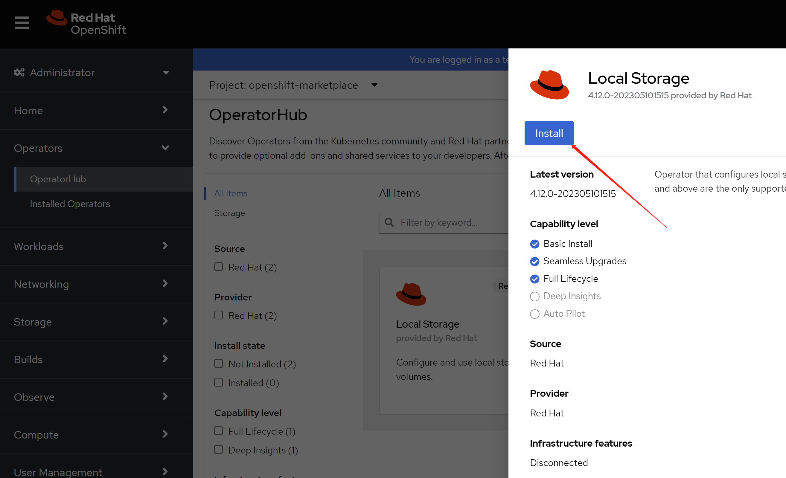
enable monitoring, this is optional.

just wait, then it will be ok.

then, install ODF
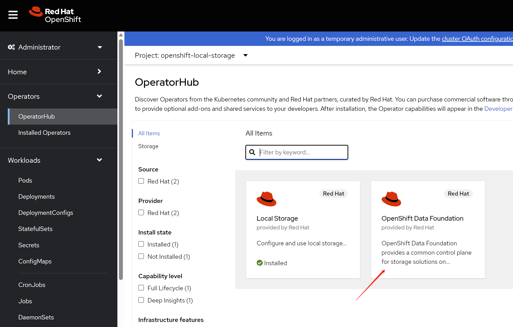
click install.

keep the default config.

after some time, the odf operator is ready.
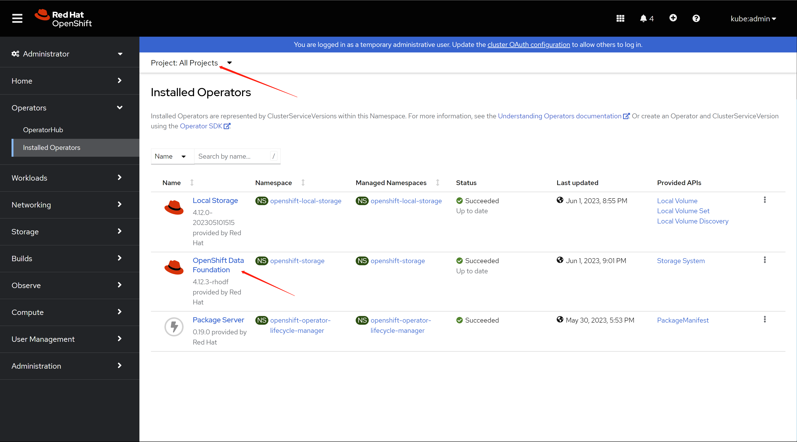
you have to init the ODF, by creating a storage system.
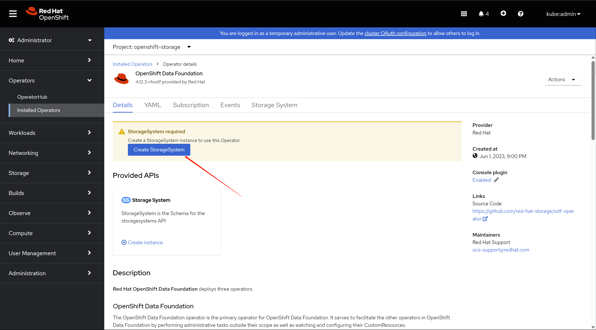
keep default config in the first stop.
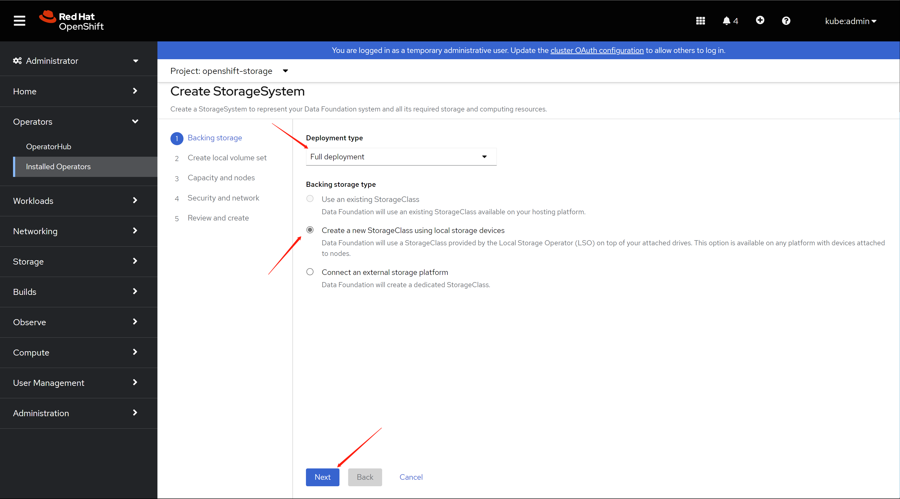
then, a config will be apply to local storage operator, and it will auto discovery the local disk, wait for sometime, it will show up all the node in the cluster, and all the disk. Select only infra node.
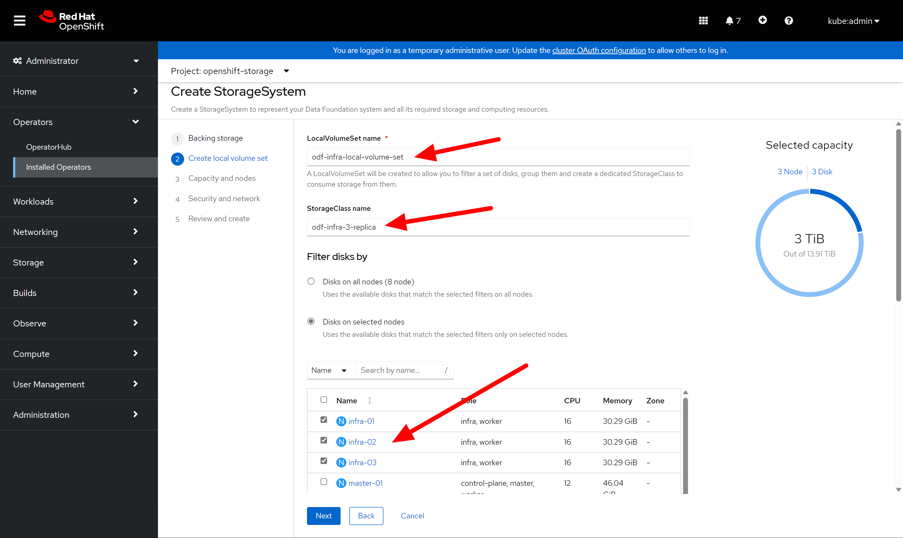
after click next, it will create local volume set in local storage operator. The local disk will be encapsulated into local volume, and consumed by ODF.

In the next, just keep the default, or you can taint the node. We already taint the node, so do not worry here.

next step, keep the default config.

review your config, and begin to create.
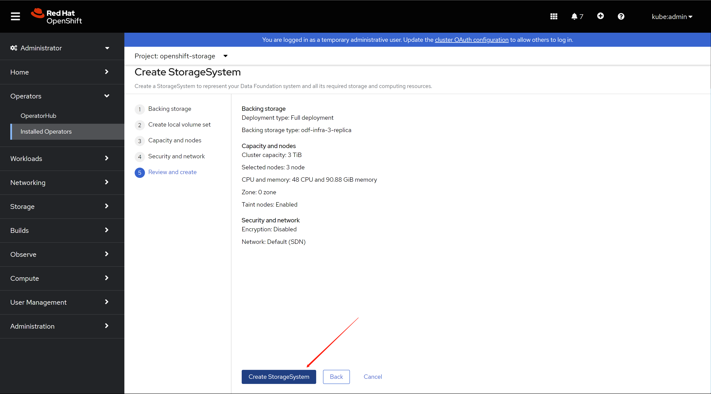
wait for sometime, it will be ok, remember to refresh the web console.

you can see the block and file is ok.

object service is ok either.

The default storage class is not ok, we will create a new one. To save space, we will use 2-replica, default is 3-replica, we will also use compression.
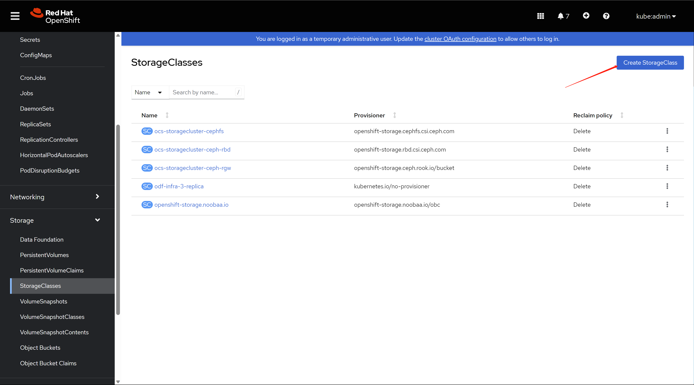
Select rbd provisioner, and create a new pool

in the popup, set the data replication policy to 2-way, and enable compression.

create block pool is ok.
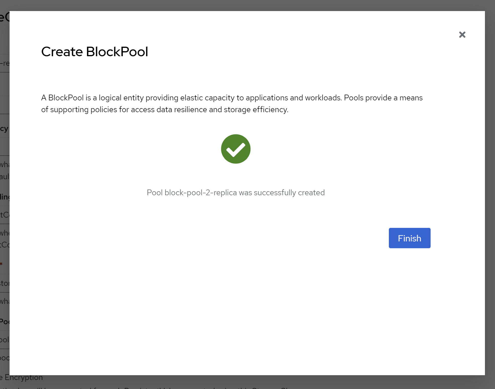
keep other config in default.

then, the new storage class is ready to use.

9.3. patch for csi components
bring csi components to infra node, NO need in our demo lab.
you can ignore below.
offical document:
- https://access.redhat.com/documentation/en-us/red_hat_openshift_data_foundation/4.12/html-single/managing_and_allocating_storage_resources/index#managing-container-storage-interface-component-placements_rhodf
# bring csi components to infra node
# NO need in out demo lab.
# you can ignore it
oc get configmap rook-ceph-operator-config -n openshift-storage -o yaml
# apiVersion: v1
# kind: ConfigMap
# metadata:
# creationTimestamp: "2023-06-01T13:00:58Z"
# name: rook-ceph-operator-config
# namespace: openshift-storage
# resourceVersion: "1139866"
# uid: 94177029-8189-4725-b712-0dbbc6fef71a
cat << EOF > ${BASE_DIR}/data/install/odf.csi-patch.yaml
data:
CSI_PLUGIN_TOLERATIONS: |
- key: nodetype
operator: Equal
value: infra
effect: NoSchedule
- key: node.ocs.openshift.io/storage
operator: Equal
value: "true"
effect: NoSchedule
EOF
oc patch OperatorHub/cluster --type merge \
--patch-file=${BASE_DIR}/data/install/odf.csi-patch.yaml